⚡
🔥
Thượng đỉnh Mỹ - Nga - Trung Quốc: Điện Kremlin nói về “cuộc gặp lịch sử”
(Dân trí) - Quan chức Điện Kremlin tiết lộ ba nhà lãnh đạo Mỹ, Nga, Trung Quốc có thể tổ chức hội nghị thượng đỉnh “mang tính lịch sử” vào tháng 11. Tổng thống Mỹ Donald Trump, Tổng thống Nga Vladimir Putin và Chủ tịch T
⚡
Qua Nhật xúc tiến đầu tư, Tây Ninh ký 7 biên bản hợp tác hơn 20 triệu USD
Hội nghị do UBND tỉnh Tây Ninh phối hợp với Đại sứ quán Việt Nam tại Nhật Bản, Hiệp hội Xúc tiến hợp tác kinh tế Việt Nam - Nhật Bản cùng tham gia tổ chức. Đến dự có Đại sứ Phạm Quang Hiệu và Chủ tịch UBND tỉnh Tây Ninh
⚡
⚡
Thủ tướng chỉ đạo tập trung triển khai ngay các giải pháp bảo đảm cung ứng điện giai đoạn 2027 – 2030
Triển khai ngay các giải pháp bảo đảm cung ứng điện giai đoạn 2027 – 2030. Bảo đảm vững chắc an ninh năng lượng quốc gia, cung ứng đủ điện là yếu tố nền tảng và quyết định thực hiện thành công nhiệm vụ phát triển kinh tế
🔥
Sở hữu 20% lợi ích tại siêu dự án 9.170 ha ở Hà Nội, lãnh đạo VinFast lên tiếng về khả năng “lấn sân” bất động sản
Sở hữu 20% lợi ích tại siêu dự án 9.170 ha ở Hà Nội, lãnh đạo VinFast lên tiếng về khả năng “lấn sân” bất động sản Theo Dương Ngọc | 22/10/2026 16:36 PM | Kinh doanh Theo dõi Cafebiz.vn trên Trong quý 3/2026, VinFast đã
🔥
Giá dầu gần như đi ngang khi triển vọng đàm phán hòa bình Nga-Ukraine tiến triển
Facebook Twitter Lưu bài viết Bản in Copy link Giá dầu chốt phiên ngày 21/10 gần như không đổi so với phiên trước đó, khi các nhà đầu tư cân nhắc triển vọng tiến triển trong đàm phán hòa bình Nga-Ukraine với lượng dầu dự
🔥
⚡
🔥
Có phải cơn sốt AI sắp hạ nhiệt? Doanh thu Anthropic tăng 45%, định giá IPO có thể giảm 500 tỷ USD
Có phải cơn sốt AI sắp hạ nhiệt? Doanh thu Anthropic tăng 45%, định giá IPO có thể giảm 500 tỷ USD Theo Nguyễn Hải | 22/10/2026 16:39 PM | Kinh doanh Theo dõi Cafebiz.vn trên Cho dù doanh thu quý vừa qua của Anthropic đạ
🔥
🔥
🔥
Khi USD là tâm điểm quý IV/2026: Doanh nghiệp cần chuẩn bị gì cho các khoản thu chi ngoại tệ?
Khi USD là tâm điểm quý IV/2026: Doanh nghiệp cần chuẩn bị gì cho các khoản thu chi ngoại tệ? Ánh Dương | 22/10/2026 07:45 AM | Kinh doanh Theo dõi Cafebiz.vn trên Quý IV/2026 được dự báo tiếp tục là giai đoạn nhiều biến
⚡
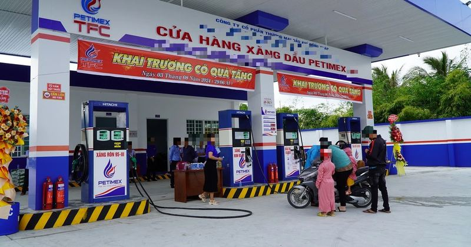
⚡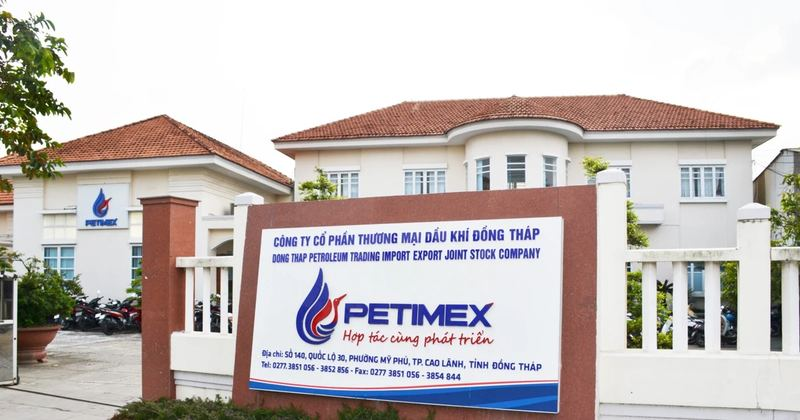
⚡Thanh tra Chính phủ đề nghị điều tra vụ Petimex bán 185 triệu lít xăng dầu không hóa đơn
Tổng Thanh tra Chính phủ Nguyễn Quốc Đoàn ký ban hành kết luận thanh tra về việc chấp hành các quy định của pháp luật trong hoạt động mua bán, kinh doanh xăng dầu tại Công ty cổ phần Thương mại Dầu khí Đồng Tháp. Tổng Th
⚡
⚡
Một hãng xe Trung Quốc xây nhà máy tại Việt Nam chuẩn bị làm xe máy điện giá rẻ: Quy đổi chỉ hơn 7 triệu đồng, đi 50km/lần sạc
Một hãng xe Trung Quốc xây nhà máy tại Việt Nam chuẩn bị làm xe máy điện giá rẻ: Quy đổi chỉ hơn 7 triệu đồng, đi 50km/lần sạc Theo Như Quỳnh | 22/10/2026 19:38 PM | Kinh doanh Theo dõi Cafebiz.vn trên Với dung lượng pin
⚡
🔥
🔥
🔥
🔥
Giải pháp phát triển thị trường chứng khoán thực sự trở thành kênh huy động vốn trung và dài hạn quan trọng của nền kinh tế
Bài viết đánh giá thực trạng phát triển tích cực của thị trường chứng khoán Việt Nam trong giai đoạn 2016- 2025 dựa trên hành lang pháp lý ngày càng được rà soát và hoàn thiện. Để thực hiện các mục tiêu chiến lược đến nă
🔥
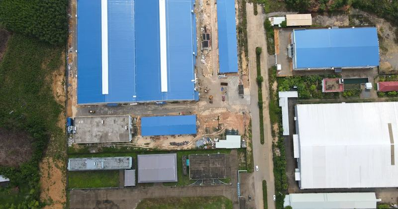
⚡
⚡
Petrovietnam tiên phong cùng các đối tác Đan Mạch phát triển điện gió ngoài khơi
Trong khuôn khổ chuyến thăm cấp Nhà nước tới Đan Mạch của Tổng Bí thư, Chủ tịch nước Tô Lâm, dịp hai nước nâng cấp quan hệ lên Đối tác Chiến lược toàn diện, ngày 19-20/10/2026 tại Copenhagen, Tổng Giám đốc Tập đoàn Công
⚡
Sửa đổi Luật Đất đai: Phải phục vụ thiết thực cho các mục tiêu phát triển
Tổ 4 (các đoàn Đại biểu Quốc hội: Đồng Nai, Quảng Trị, Điện Biên) thảo luận - Ảnh: chinhphu.vn/Nguyễn Hoàng Sáng nay (22/10), Quốc hội thảo luận ở Tổ về dự án Luật Đất đai (sửa đổi). Cơ bản các ý kiến nhất trí với dự thả
⚡
Agribank giảm lãi suất cho vay tới 2,5%/năm, dành 500.000 tỷ đồng tín dụng ưu đãi
Agribank giảm lãi suất cho vay tới 2,5%/năm, dành 500.000 tỷ đồng tín dụng ưu đãi Giảm lãi suất, dành nguồn lực hỗ trợ khách hàng Thực hiện chỉ đạo của Chính phủ và Ngân hàng Nhà nước, Ngân hàng Nông nghiệp và Phát triể
⚡
Đề xuất giữ lại 5% tiền mua nhà tại ngân hàng, có sổ đỏ mới trả cho chủ đầu tư
Đề xuất giữ lại 5% tiền mua nhà tại ngân hàng, có sổ đỏ mới trả cho chủ đầu tư Theo Anh Văn | 22/10/2026 18:33 PM | Kinh doanh Theo dõi Cafebiz.vn trên Trước khi bên mua, thuê mua được cấp giấy chứng nhận quyền sử dụng đ
🔥
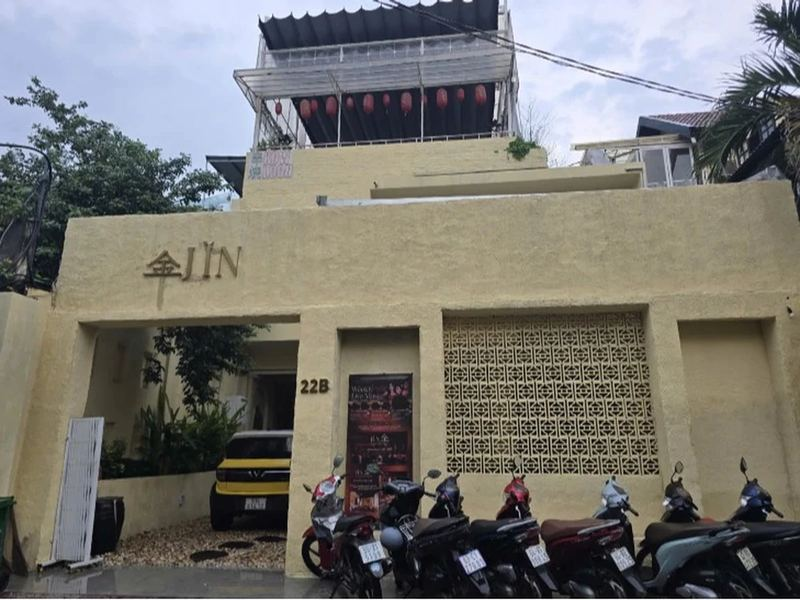
🔥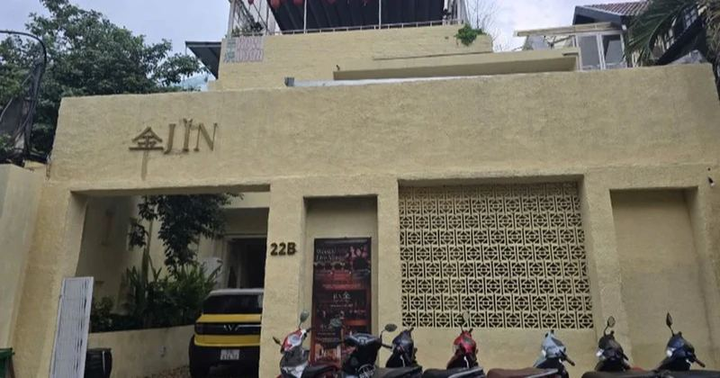
🔥
🔥
HOSE - Dấu ấn tạo nền tảng thị trường chứng khoán Việt Nam, khơi thông dòng vốn
Trong hành trình 30 năm hình thành và phát triển của thị trường Chứng khoán Việt Nam, Sở Giao dịch Chứng khoán TP. Hồ Chí Minh giữ vai trò tiên phong, là nơi khởi đầu của phiên giao dịch đầu tiên và từng bước trở thành t
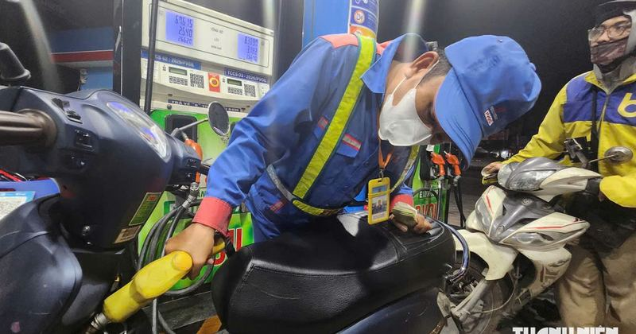
🔥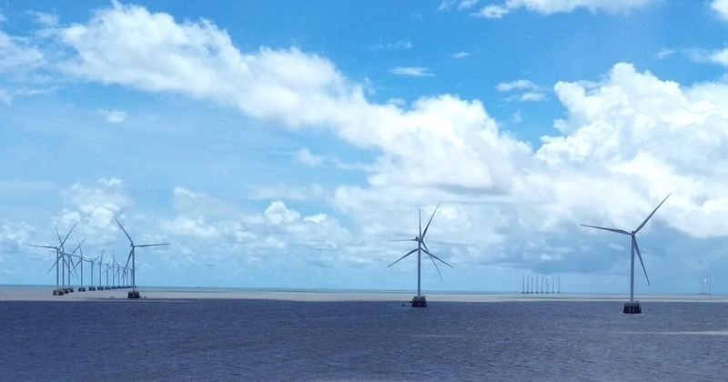
⚡
⚡
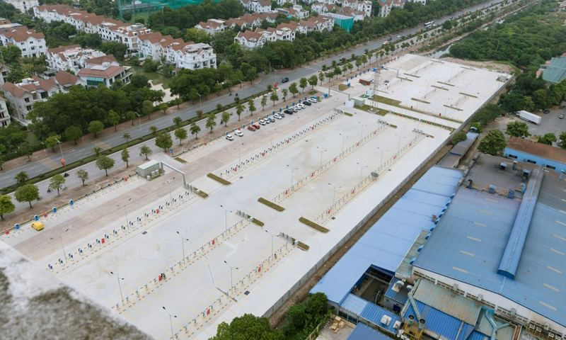
🔥
🔥
🔥
Đại biểu Quốc hội: Nên để chủ đầu tư nhận tiền đặt cọc bất động sản sớm hơn
Đại biểu Quốc hội: Nên để chủ đầu tư nhận tiền đặt cọc bất động sản sớm hơn Đại biểu Bùi Xuân Hải đề xuất cho doanh nghiệp được nhận 5% tiền đặt cọc bất động sản hình thành trong tương lai sớm hơn, thay vì chờ đến khi dự
🔥
🔥
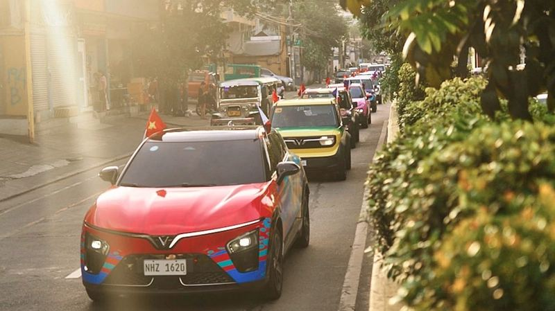
🔥
🔥
14 thương nhân đầu mối xăng dầu giảm 300-350 đồng/lít so với giá điều hành
Bảng so sánh giá bán xăng dầu tại Việt Nam và các nước lân cận ngày 15/10/2026 Tại thời điểm ngày 15/10/2026, giá xăng tại Việt Nam không cao hơn 27.029 đồng/lít, thấp hơn Thái Lan (32.471 đồng/lít), Campuchia (34.026 đồ
🔥
Bộ trưởng Lâm Thị Phương Thanh: Rạp còn rất thiếu thì không thể phát triển được điện ảnh
Sáng 22/10, Quốc hội thảo luận tại tổ 3 dự án: Luật Đất đai, Luật Nhà ở và Luật Kinh doanh bất động sản. Phát biểu tại tổ TP Hà Nội, với dự thảo Luật Đất đai (sửa đổi), Bộ trưởng VH-TT-DL Lâm Thị Phương Thanh cho biết, N
🔥
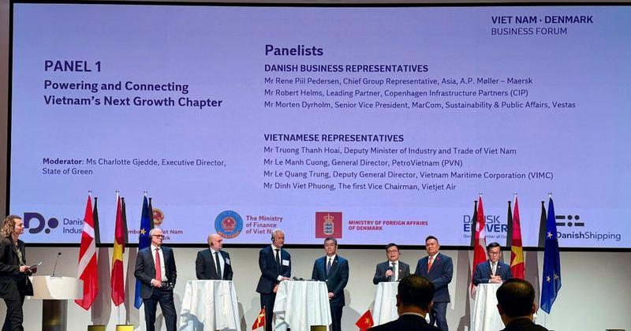
🔥
🔥
🔥
Nga lên tiếng về ‘hội nghị thượng đỉnh lịch sử’ Putin - Trump - Tập Cận Bình
Hội nghị thượng đỉnh Diễn đàn Hợp tác Kinh tế châu Á - Thái Bình Dương (APEC) dự kiến sẽ diễn ra tại Thâm Quyến, Trung Quốc vào ngày 18 - 19/11 tới. Trong cuộc trao đổi với hãng tin Vesti của Nga hôm 21/10, ông Ushakov
🔥
🔥
🔥
🔥
🔥
Tin tức thế giới 22-10: Ông Trump tin chiến sự ở Ukraine sắp kết thúc; Triều Tiên lắp loa chống Hàn Quốc
Tổng thống Mỹ Donald Trump - Ảnh: AFP Ông Trump nói kết thúc của xung đột Nga - Ukraine đang gần hơn bao giờ hết Theo Hãng tin AFP, Tổng thống Mỹ Donald Trump hôm 21-10 bày tỏ niềm tin xung đột Nga - Ukraine có thể đang
🔥
⚡
Hai lỗ hổng bảo mật nghiêm trọng đã có bản vá, doanh nghiệp nên chủ động rà soát
Chiều 22-10, thông tin từ Cục An ninh mạng (Bộ Công an) và Hiệp hội An ninh mạng quốc gia (NCA) cho biết, hai lỗ hổng bảo mật mang mã CVE-2026-109618 và CVE-2026-109619 trong ngôn ngữ lập trình PHP đã có bản vá chính thứ
⚡
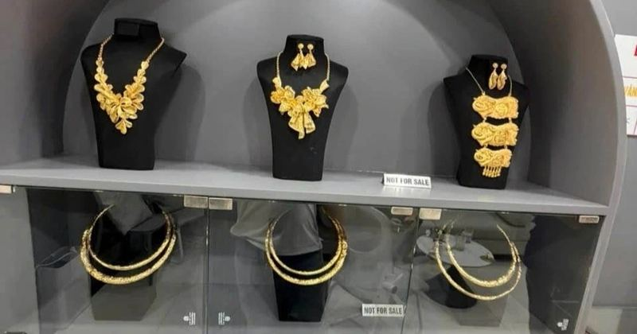
⚡
⚡
🔥
🔥
🔥
🔥
Tăng trưởng cao giai đoạn 2026- 2030: Bài toán vốn không chỉ nằm ở quy mô huy động
Mục tiêu tăng trưởng cao giai đoạn 2026 - 2030 đòi hỏi Việt Nam huy động khoảng 1.467 tỷ USD vốn đầu tư toàn xã hội. Trong bối cảnh tín dụng ngân hàng tiến gần giới hạn, thị trường vốn chưa phát huy hết tiềm năng, TS. Cấ
🔥
'Cần cho doanh nghiệp chưa nộp đủ tiền đất được chuyển nhượng dự án đình trệ'
'Cần cho doanh nghiệp chưa nộp đủ tiền đất được chuyển nhượng dự án đình trệ' Đại biểu Nguyễn Thị Việt Nga đề xuất cho doanh nghiệp chưa nộp đủ tiền đất được bán dự án dang dở, nhằm đưa nguồn lực đóng băng trở lại nền ki
🔥
🔥
Sửa Luật Đất đai: Gắn mã định danh từng thửa đất, người dân có thể dùng sổ đỏ điện tử thay bản giấy
Bộ trưởng Hoàng Thanh Tùng - Ảnh: GIA HÂN Sáng 22-10, Bộ trưởng Bộ Tư pháp Hoàng Thanh Tùng trình Quốc hội dự án Luật Đất đai (sửa đổi) , Luật Nhà ở (sửa đổi) và Luật Kinh doanh bất động sản (sửa đổi), với trọng tâm tháo
🔥
Bán dẫn Việt Nam trước cột mốc 1.000 tỷ USD: Nâng tầm vị thế và hội nhập sâu vào chuỗi giá trị toàn cầu
Trí tuệ nhân tạo (AI), tính toán hiệu năng cao và xu hướng chuyển đổi số đang đưa ngành bán dẫn toàn cầu tiến tới cột mốc lịch sử 1.000 tỷ USD vào năm 2026. Trong bối cảnh chuỗi cung ứng quốc tế tái cấu trúc mạnh mẽ, Đôn
🔥
🔥
Siêu dự án sân bay 16 tỷ USD lớn nhất Việt Nam chuẩn bị khánh thành, loạt khu đô thị và công nghiệp tại Long Thành cấp tập triển khai
TIN MỚI Khi Cảng hàng không quốc tế Long Thành bước vào giai đoạn nước rút trước khi dự kiến chính thức khai trương vào 24/12 năm nay, cao tốc Bến Lức – Long Thành cũng đã chính thức thông xe toàn tuyến từ ngày 1/10/2026
🔥
🔥
Ông Putin đồng ý nối lại đàm phán, Ukraine nêu đề xuất chấm dứt xung đột
(Dân trí) - Điện Kremlin tuyên bố Nga đồng ý nối lại các cuộc đàm phán hòa bình ba bên với Ukraine và Mỹ, trong khi Kiev đề xuất đóng băng chiến tuyến. Tổng thống Nga Vladimir Putin đón Đặc phái viên Mỹ Steve Witkoff tro
🔥
⚡
⚡
Sửa 3 luật về bất động sản: Gỡ vướng mắc thủ tục, tăng minh bạch thị trường
TIN MỚI Gỡ điểm nghẽn pháp lý, khơi thông nguồn cung Trao đổi với PV Tiền Phong , ông Phạm Nguyễn Toan - Phó Chủ tịch Hiệp hội Bất động sản Việt Nam - cho rằng khi các quy định của 3 Luật Đất đai, Nhà ở, Kinh doanh bất đ
⚡
⚡
⚡
Tổng Bí thư, Chủ tịch nước Tô Lâm dự tọa đàm cấp cao với lãnh đạo doanh nghiệp tiêu biểu châu Âu và Bỉ
Phát biểu tại tọa đàm, ông Andries Gryffroy, Phó Chủ tịch thứ nhất Thượng viện Bỉ khẳng định Việt Nam, Bỉ và châu Âu có quan hệ hợp tác kinh tế hiệu quả, tọa đàm là cơ hội để tiếp tục làm sâu sắc hơn quan hệ hợp tác và p
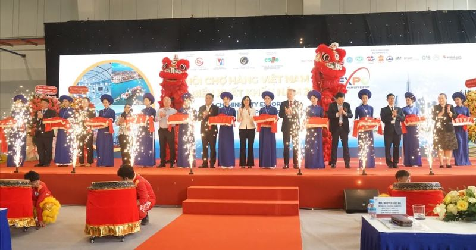
⚡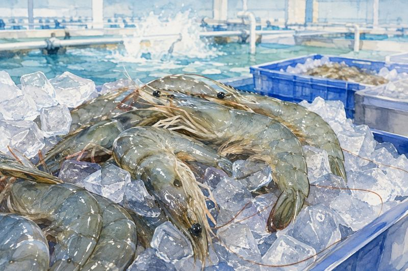
⚡
⚡
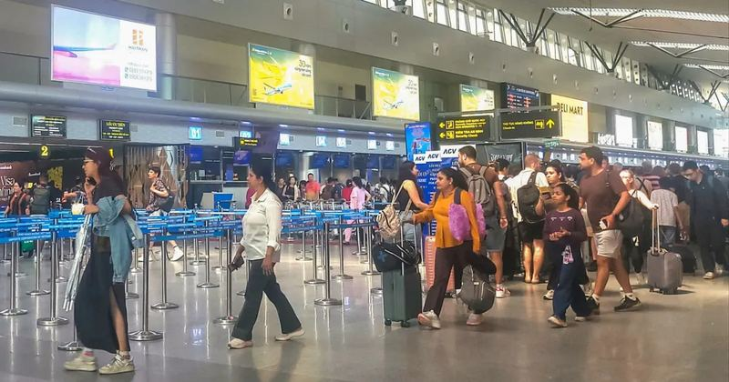
⚡
⚡
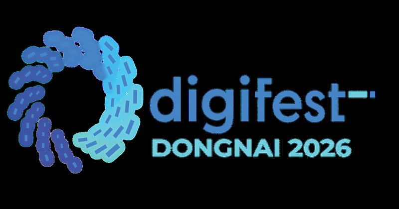
⚡DIGIFEST Đồng Nai 2026: Đưa chuyển đổi số, đổi mới sáng tạo vào thực tiễn
Mô phỏng Diễn đàn và Triển lãm DIGIFEST Đồng Nai 2026 - Ảnh: BTC cung cấp Từ ngày 30/10 đến 1/11/2026, Chương trình DIGIFEST Đồng Nai 2026 sẽ diễn ra tại Trung tâm Xúc tiến Đầu tư, Thương mại và Du lịch Đồng Nai, nhằm cụ
⚡
🔥
Mỹ đưa 'báu vật công nghệ mạnh nhất thế giới' sang Việt Nam phục vụ dự án 5.200 tỷ đồng - Đến Tesla, Meta, Microsoft cũng phải săn đón
Mỹ đưa 'báu vật công nghệ mạnh nhất thế giới' sang Việt Nam phục vụ dự án 5.200 tỷ đồng - Đến Tesla, Meta, Microsoft cũng phải săn đón Theo Khánh Vy | 22/10/2026 14:22 PM | Công nghệ Theo dõi Cafebiz.vn trên Công nghệ nà
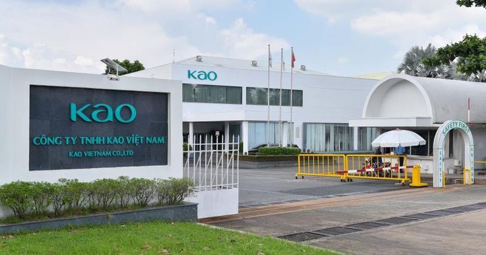
🔥Kao Việt Nam mở rộng vai trò doanh nghiệp trong hành trình phát triển bền vững
Từ nền tảng khoa học toàn cầu đến trách nhiệm tại địa phương Trong một thế giới mà các thách thức về môi trường và phát triển kinh tế ngày càng gắn kết, vai trò của doanh nghiệp không chỉ nằm ở việc cung cấp sản phẩm, dị
🔥
🔥
Hôm nay, Quốc hội thảo luận ba dự án luật về đất đai, nhà ở và bất động sản
Hôm nay, Quốc hội thảo luận ba dự án luật về đất đai, nhà ở và bất động sản Theo Luân Dũng - Trường Phong | 22/10/2026 08:38 AM | Kinh tế vĩ mô Theo dõi Cafebiz.vn trên Tiếp tục chương trình kỳ họp, hôm nay (22/10), Quốc
🔥
Hôm nay, Quốc hội thảo luận ba dự án luật về đất đai, nhà ở và bất động sản
TIN MỚI Cụ thể, sáng 22/10, Bộ trưởng Bộ Nông nghiệp và Môi trường, thừa ủy quyền của Thủ tướng Chính phủ trình bày tờ trình về dự án Luật Đất đai (sửa đổi). Bộ trưởng Bộ Xây dựng sẽ trình bày tờ trình của Chính phủ về 2
🔥
🔥
Hôm nay, Quốc hội thảo luận ba dự án luật về đất đai, nhà ở và bất động sản
Cụ thể, sáng 22/10, Bộ trưởng Bộ Nông nghiệp và Môi trường, thừa ủy quyền của Thủ tướng Chính phủ trình bày tờ trình về dự án Luật Đất đai (sửa đổi). Bộ trưởng Bộ Xây dựng sẽ trình bày tờ trình của Chính phủ về 2 dự án:
⚡
⚡
⚡
Tổng Bí thư, Chủ tịch nước Tô Lâm: Hợp tác kinh tế với châu Âu không chỉ mở rộng mà phải nâng chất
Tổng Bí thư, Chủ tịch nước Tô Lâm tại tọa đàm cấp cao với các doanh nghiệp tiêu biểu của EU ngày 22-10 - Ảnh: TTXVN Trong khuôn khổ chuyến thăm chính thức Liên minh châu Âu (EU) và Vương quốc Bỉ, sáng 22-10 (giờ địa phươ
⚡
[Video] Thời sự 24h ngày 22/10/2026: Kỳ họp thứ 2, Quốc hội khóa XVI: Quốc hội thảo luận về 3 dự án luật quan trọng liên quan đến đất đai và nhà ở
Tiếp tục chương trình Kỳ họp thứ Hai, Quốc hội khóa XVI, ngày 22/10, Quốc hội nghe Tờ trình, Báo cáo thẩm tra và thảo luận ở tổ về các dự án luật quan trọng liên quan đến giải phóng nguồn lực đất đai, bao gồm Luật Đất đa
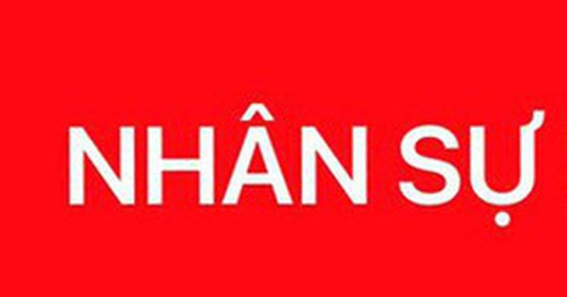
⚡
⚡
⚡
⚡
⚡
🔥
🔥
Petrovietnam xác định điện hạt nhân Ninh Thuận 2 là nhiệm vụ ưu tiên hàng đầu
Thành viên HĐTV Petrovietnam Phạm Tuấn Anh phát biểu tại hội thảo Ngày 20/10, Tập đoàn Công nghiệp - Năng lượng Quốc gia Việt Nam (Petrovietnam) tổ chức Hội thảo góp ý dự thảo Chiến lược và Kế hoạch tổng thể phát triển ứ
🔥
🔥
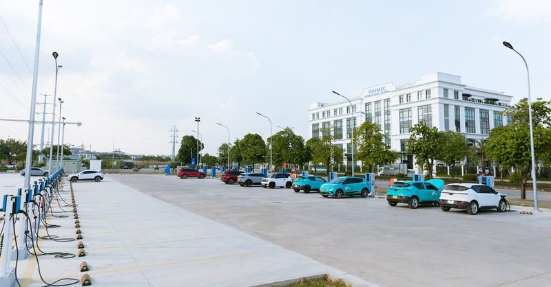
🔥Trạm sạc ô tô điện lớn nhất Việt Nam tại Vinhomes Riverside bắt đầu hoạt động năm 2026
Trạm sạc ô tô điện có quy mô lớn nhất Việt Nam bắt đầu đi vào hoạt động Thúy Hạnh | 22/10/2026 14:46 PM | Công nghệ Theo dõi Cafebiz.vn trên V-Green đã đưa vào hoạt động một phần trạm sạc tại khu đô thị Vinhomes Riversid
🔥
Đề xuất giữ lại 5% tiền mua nhà tại ngân hàng, có sổ đỏ mới trả cho chủ đầu tư
Đề xuất giữ lại 5% tiền mua nhà tại ngân hàng, có sổ đỏ mới trả cho chủ đầu tư Theo Anh Văn | 22/10/2026 14:08 PM | Kinh doanh Theo dõi Cafebiz.vn trên Trước khi bên mua, thuê mua được cấp giấy chứng nhận quyền sử dụng đ
🔥
Thủ tướng yêu cầu hoàn thiện nghị định kinh doanh xăng dầu trước ngày 10.11
Cụ thể, Thủ tướng Chính phủ yêu cầu Bộ Công thương khẩn trương hoàn thiện dự thảo nghị định thay thế Nghị định 83/2014/NĐ-CP về kinh doanh xăng dầu . Bộ Công thương chủ trì, phối hợp với các Bộ Tài chính, Tư pháp, Xây dự
🔥
🔥
Đề nghị gỡ vướng chuyển nhượng dự án khi chủ đầu tư mất khả năng triển khai
Các đại biểu tham dự Phiên họp. Ảnh: Media Quốc hội Sáng 22/10, tiếp tục chương trình Kỳ họp thứ Hai, Quốc hội khóa XVI, dưới sự chủ trì của Chủ tịch Quốc hội Trần Thanh Mẫn và điều hành của Phó Chủ tịch Quốc hội Nguyễn
🔥
Tên lửa dội xuống Kiev, máy bay không người lái bủa vây Mátxcơva bất chấp tín hiệu hòa bình
Chính quyền Kiev cho biết, các cuộc tấn công của Nga đã gây hư hại cho cơ sở hạ tầng tàu điện ngầm trên cầu Nam bắc qua sông Dnipro tại thủ đô Ukraine, đồng thời làm gián đoạn giao thông tại khu vực này. Trước đó, một cu
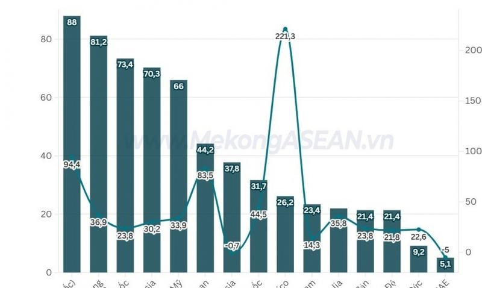
🔥
🔥
Ukraine tuyên bố sẵn sàng 'đóng băng' chiến tuyến để tìm kiếm hòa bình với Nga
(Ảnh: AP) Trả lời trong một cuộc phỏng vấn với Fox News ngày 21/10, ông Zelensky cho biết: “Hiện tại, chúng ta cần đóng băng xung đột. Tôi nghĩ đây là một cách thực tế để chấm dứt cuộc chiến này. Chúng ta gọi đó là lệnh
🔥
🔥
🔥
🔥
Tổng thống Ukraine nói sẵn sàng đóng băng xung đột ở các chiến tuyến hiện tại
Theo báo Ukrainska Pravda, trong một cuộc phỏng vấn với kênh Fox News phát sóng hôm 21/10, ông Zelensky cho biết: "Ngay lúc này, chúng ta cần phải đóng băng cuộc xung đột và tôi nghĩ đây là cách thực tế để chấm dứt cuộc
🔥
Định hình không gian cho thiết bị bay không người lái: Hướng đến phát triển kinh tế tầm thấp
Nhiều ứng dụng phục vụ đời sống, sản xuất Tháng 2-2026, Sở KH-CN TPHCM phối hợp cùng Tổng Công ty Bưu điện Việt Nam (Vietnam Post) và Công ty cổ phần CT UAV khai trương tuyến giao hàng bằng UAV kết nối giữa xã Cần Giờ vớ
🔥
🔥
🔥
⚡
Mở hộp ốp lưng chính hãng cho iPhone Duo: Hai mảnh, MagSafe và cả dải keo cố định, nhưng mua xong cần làm ngay điều này
Mở hộp ốp lưng chính hãng cho iPhone Duo: Hai mảnh, MagSafe và cả dải keo cố định, nhưng mua xong cần làm ngay điều này Theo Tuấn Lê | 22/10/2026 20:32 PM | Công nghệ Theo dõi Cafebiz.vn trên Ốp hai mảnh của iPhone Duo c
⚡
⚡
⚡
Lazada bứt phá với chỉ số vượt trội , cạnh tranh mạnh mẽ với Shopee và TikTok Shop
Chiếm thị phần nhỏ, Lazada và Tiki có chỉ số khiến Shopee, TikTok Shop phải dè chừng Theo Thúy Hạnh | 22/10/2026 20:06 PM | Công nghệ Theo dõi Cafebiz.vn trên Shopee và TikTok Shop thu hút lượng giao dịch lớn với giá trị
⚡
Tổng Bí thư, Chủ tịch nước dự tọa đàm cấp cao với lãnh đạo doanh nghiệp châu Âu
Trong khuôn khổ chuyến thăm chính thức Liên minh châu Âu (EU) và Vương quốc Bỉ, sáng 22/10 (giờ địa phương), Tổng Bí thư, Chủ tịch nước Tô Lâm và Đoàn đại biểu cấp cao Việt Nam đã dự tọa đàm cấp cao với lãnh đạo doanh ng
⚡
Tổng Bí thư, Chủ tịch nước dự tọa đàm cấp cao với lãnh đạo doanh nghiệp tiêu biểu châu Âu và Bỉ
Theo đặc phái viên TTXVN , trong khuôn khổ chuyến thăm chính thức Liên minh châu Âu (EU) và Vương quốc Bỉ, sáng 22/10 (giờ địa phương), Tổng Bí thư, Chủ tịch nước Tô Lâm và Đoàn đại biểu cấp cao Việt Nam đã dự tọa đàm cấ
⚡
⚡
⚡
🔥
Tổng Bí thư, Chủ tịch nước Tô Lâm dự Tọa đàm cấp cao với Lãnh đạo các doanh nghiệp tiêu biểu châu Âu
Phát biểu chào mừng, Phó Chủ tịch Thứ nhất Thượng viện Bỉ Andries Gryffroy khẳng định Việt Nam, Bỉ và châu Âu đã có mối quan hệ kinh tế rất sâu sắc. Hiệp định thương mại tự do Việt Nam-EU (EVFTA) đã mở ra nhiều cơ hội mớ
🔥
🔥
Tổng Bí thư, Chủ tịch nước Tô Lâm dự tọa đàm cấp cao với lãnh đạo doanh nghiệp tiêu biểu châu Âu và Bỉ
Tổng Bí thư, Chủ tịch nước Tô Lâm dự tọa đàm cấp cao với lãnh đạo doanh nghiệp tiêu biểu châu Âu và Bỉ - Ảnh: TTXVN Phát biểu tại tọa đàm, ông Andries Gryffroy, Phó Chủ tịch thứ nhất Thượng viện Bỉ khẳng định Việt Nam, B
🔥
🔥
🔥
🔥
🔥
Nâng cao hiệu quả dự báo, cảnh báo; lồng ghép nội dung phòng, chống thiên tai vào tất cả các quy hoạch
Phát biểu tại cuộc họp, Phó Thủ tướng Hồ Quốc Dũng nhấn mạnh, giai đoạn 2021-2025, Việt Nam chịu ảnh hưởng của 21/22 loại hình thiên tai, làm 1.455 người chết và mất tích, gây thiệt hại kinh tế trên 230.000 tỷ đồng, đặc
🔥
🔥
Phó Thống đốc NHNN: AI phải tạo giá trị, không chỉ tạo ấn tượng công nghệ
Phát biểu khai mạc Hội thảo và Triển lãm Smart Banking 2026 ngày 22/10, ông Đào Minh Tú, Phó Chủ tịch kiêm Tổng thư ký Hiệp hội Ngân hàng Việt Nam , cho biết ngành ngân hàng đang chuyển từ số hóa quy trình, đưa giao dịch
🔥
🔥
🔥
🔥
🔥
Một cổ phiếu ngân hàng được hơn 50 quỹ cùng “xuống tiền” gom hàng, lợi nhuận quý 3 dự báo tăng vọt
TIN MỚI Theo báo cáo Hoạt động các quỹ đầu tư tại Việt Nam tháng 9/2026 của FiinGroup, cổ phiếu ngân hàng chiếm 8/10 vị trí trong danh sách các mã được mua ròng nhiều nhất. Xét theo giá trị, đây cũng là nhóm ngành duy nh
⚡
Hải quan khu vực IV cảnh báo 14 nhóm rủi ro đối với doanh nghiệp chế xuất
Ngày 22/10, tại tỉnh Hưng Yên, Chi cục Hải quan khu vực IV tổ chức Hội nghị tuyên truyền, hướng dẫn các quy định về thủ tục hải quan, kiểm tra, giám sát hải quan đối với doanh nghiệp chế xuất. Hội nghị do ông Trần Mạnh H
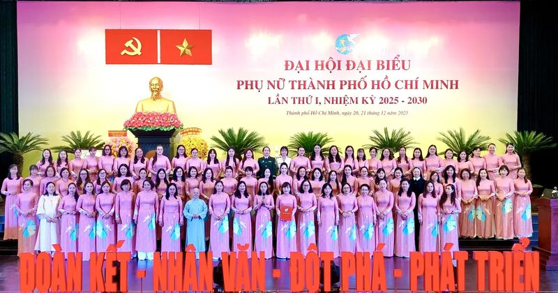
⚡
⚡
⚡
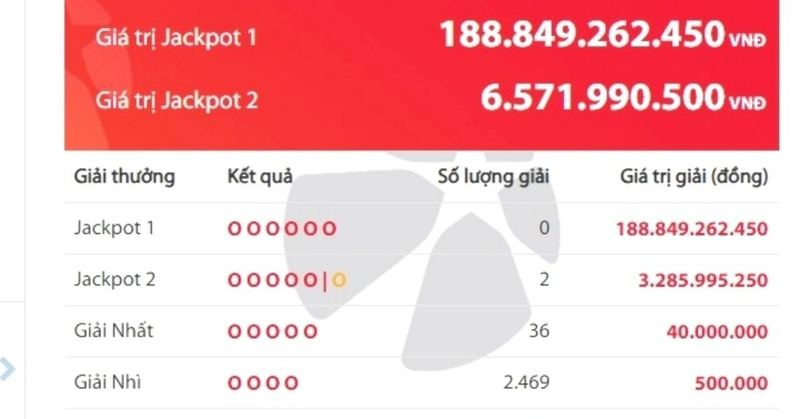
⚡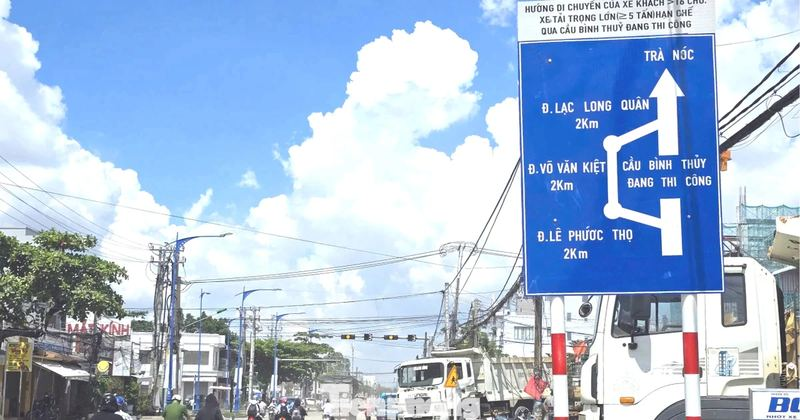
⚡Rà soát dôi dư hơn 3.000 tỷ đồng, dự án mở rộng Quốc lộ 91 vẫn chậm tiến độ
TIN MỚI Dự án nâng cấp, mở rộng Quốc lộ 91 (đoạn 7 km đầu tuyến) do Ban Quản lý dự án đầu tư xây dựng công trình giao thông và nông nghiệp Cần Thơ (Ban QLDA) làm chủ đầu tư. Dự án trải qua nhiều giai đoạn thực hiện dở d
⚡
Chứng khoán VIX còn 1.000 tỷ đồng vốn huy động từ chào bán cổ phiếu chưa giải ngân
TIN MỚI CTCP Chứng khoán VIX (MCK: VIX, sàn HoSE) vừa có báo cáo về tiến độ sử dụng số tiền thu được từ đợt chào bán theo Giấy chứng nhận đăng ký chào bán số 41/GCN-UBCK do Chủ tịch UBCKNN cấp ngày 13/2/2026. Cụ thể, ngà
⚡
⚡
⚡
⚡
⚡
⚡
⚡
Triệt phá các nhóm tín dụng đen trá hình dịch vụ cho thuê vàng tại TP Hồ Chí Minh
Facebook Twitter Lưu bài viết Bản in Copy link Thực hiện chỉ đạo của Thượng tướng Nguyễn Văn Long, Ủy viên Trung ương Đảng, Thứ trưởng, Thủ trưởng Cơ quan Cảnh sát điều tra Bộ Công an về quyết liệt quản lý, đấu tranh, xử
⚡
⚡
Nhật Bản viện trợ 646 triệu yên nâng cao năng lực thực thi pháp luật Việt Nam
Ngày 22/10, tại Hà Nội, Chính phủ Nhật Bản và Cơ quan Phòng chống Ma túy và Tội phạm của Liên hợp quốc (UNODC) ký thỏa thuận triển khai dự án tăng cường năng lực thực thi pháp luật trên biển và đường thủy nội địa tại Việ
⚡
Liên tiếp 7 tàu trúng hỏa lực và thủy lôi trên eo biển Hormuz, Iran cảnh báo Mỹ
(Ảnh: Reuters) Trong tuyên bố của mình, IRGC không nêu rõ thông tin của các tàu bị tấn công tại eo biển Hormuz. Tuy nhiên, có 4 tàu đã bị tấn công trực tiếp vì bị cáo buộc vi phạm các quy định do Iran đặt ra đối với hoạt
⚡
Khách tới TPHCM tăng, chủ quản Công viên Đầm Sen vẫn lỗ hàng chục tỷ đồng
(Dân trí) - Doanh thu du lịch TPHCM 9 tháng ước tăng 43,4%, nhưng Phú Thọ Tourist, đơn vị quản lý Công viên văn hóa Đầm Sen, vẫn lỗ hơn 15 tỷ đồng trong quý III. Theo báo cáo tài chính quý III, Công ty cổ phần Dịch vụ Du
⚡
⚡
Xã Châu Pha đối thoại, tháo gỡ vướng mắc cho dự án đường Phú Mỹ - Tóc Tiên
Lãnh đạo xã Châu Pha đối thoại với các hộ dân Tại buổi đối thoại, các hộ dân nêu những vướng mắc liên quan việc xác định mức giá vị trí đất thu hồi cũng như những ảnh hưởng đến nhà ở, công trình khi tuyến đường được nâng
⚡
⚡
Sun PhuQuoc Airways sắp bay thẳng hơn 7.000 km tới Moscow, tăng lên 6 chuyến/tuần từ đầu năm 2027
Sun PhuQuoc Airways sắp bay thẳng hơn 7.000 km tới Moscow, tăng lên 6 chuyến/tuần từ đầu năm 2027 Phương Vy | 22/10/2026 18:15 PM | Kinh doanh Theo dõi Cafebiz.vn trên Sun PhuQuoc Airways dự kiến khai trương đường bay th
🔥
Vietjet và Satair trao Thoả thuận chiến lược phát triển chuỗi cung ứng hàng không tại Việt Nam
Vietjet và Satair trao MOU chiến lược phát triển chuỗi cung ứng hàng không trong Diễn đàn Doanh nghiệp Việt Nam - Đan Mạch tại Copenhagen Thỏa thuận mở ra bước phát triển mới trong quan hệ hợp tác giữa hai doanh nghiệp,
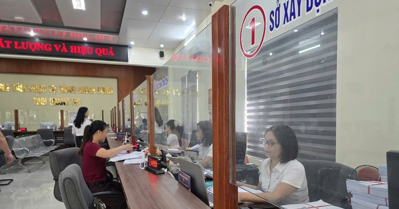
🔥
🔥
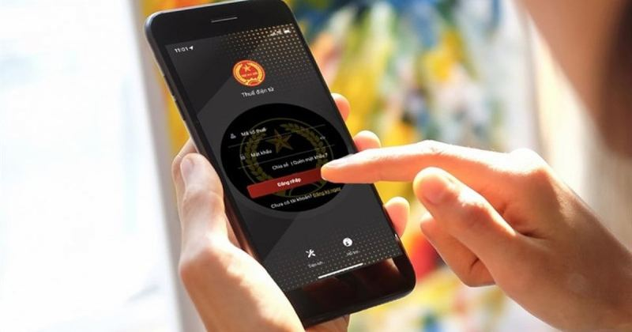
🔥Thay đổi mới nhất trên ứng dụng eTax Mobile mà tất cả người nộp thuế cần nắm rõ
Thay đổi mới nhất trên ứng dụng eTax Mobile mà tất cả người nộp thuế cần nắm rõ Theo Hà Giang | 22/10/2026 16:55 PM | Công nghệ Theo dõi Cafebiz.vn trên Thời gian qua, ứng dụng eTax Mobile liên tục được cập nhật, bổ sung
🔥
Chuyên gia Việt 'vạch trần' mã độc tinh vi 9 giai đoạn tại diễn đàn an ninh mạng thế giới
Virus Bulletin Conference là một trong những diễn đàn hàng đầu thế giới về nghiên cứu mã độc - Ảnh: THÚY QUỲNH Tại hội nghị an ninh mạng quốc tế Virus Bulletin Conference 2026 vừa diễn ra tại thành phố Sevilla, Tây Ban N
🔥
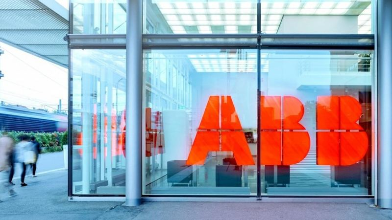
🔥ABB liên doanh với Mitsubishi Electric mở rộng thị trường châu Á - Thái Bình Dương
ABB liên doanh với Mitsubishi Electric mở rộng lĩnh vực điện khí hóa tại thị trường châu Á - Thái Bình Dương. Ảnh: ABB Thông tin được ABB công bố ngày 20/10 cho biết, tập đoàn đã đạt được thỏa thuận thành lập liên doanh
🔥
Lời khai của kẻ đập kính ô tô, cầm dao đâm người đàn ông tử vong ở Hà Nội
Ngày 22/10, Cơ quan Cảnh sát điều tra Công an TP Hà Nội đã khởi tố bị can, bắt tạm giam Trần Quý Hoan (47 tuổi, trú tại phường Bồ Đề, Hà Nội) để điều tra về tội Giết người, liên quan đến vụ sát hại tài xế ô tô trên phố B
🔥
🔥
Đại biểu Quốc hội: Sửa Luật Đất đai cần gỡ nút thắt định giá đất thanh toán dự án BT
Phó chủ nhiệm Ủy ban Công tác đại biểu Trần Văn Lâm - Ảnh: Q.H Sáng nay (22-10), các đại biểu Quốc hội thảo luận tại tổ về dự án Luật Đất đai (sửa đổi) . Mục tiêu của việc sửa đổi luật lần này là nhằm khắc phục những vướ
🔥
Quốc hội làm việc, thảo luận về Luật Đất đai, Luật Nhà ở và Luật Kinh doanh bất động sản
Facebook Twitter Lưu bài viết Bản in Copy link Tiếp tục chương trình Kỳ họp thứ 2, Quốc hội khóa XVI, ngày 22/10, Quốc hội xem xét sửa đổi các quy định liên quan đến Luật Đất đai (sửa đổi), Luật Nhà ở (sửa đổi), Luật Kin
🔥
Việt Nam sắp có tuyến cáp treo nối thẳng lên đỉnh núi cao gần 1.700 m, rút ngắn hành trình xuyên rừng từ 4 giờ xuống 15 phút, công trình do Sun Group đầu tư
TIN MỚI Ngày 10/5/2026, UBND tỉnh Điện Biên phối hợp với Sun Group tổ chức động thổ Tổ hợp cáp treo kết hợp du lịch văn hóa, lịch sử Điện Biên Phủ. Dự án có quy mô khoảng 35,35 ha, nằm trên địa bàn hai xã Mường Phăng và
🔥
Chỉ đạo nóng về hai tuyến cao tốc dài gần 140km do T&T và Sơn Hải đầu tư tại tỉnh rộng nhất Việt Nam
TIN MỚI Tại buổi làm việc ngày 21/10, lãnh đạo UBND tỉnh Lâm Đồng yêu cầu các đơn vị đẩy nhanh giải phóng mặt bằng, tổ chức thi công và giải ngân vốn đầu tư công trong những tháng cuối năm 2026. Với cao tốc Tân Phú – Bảo
🔥
⚡
Sau 5 năm, nhà ở xã hội chỉ được bán cho người thuộc diện mua nhà ở xã hội
Chiều 22/10, tiếp tục chương trình Kỳ họp thứ 2, các đại biểu Quốc hội thảo luận tại tổ về các dự án sửa đổi Luật Đất đai , Luật Nhà ở và Luật Kinh doanh bất động sản. Nhà nước không bao cấp về nhà ở nhưng cũng không để
⚡
Tổng Bí thư, Chủ tịch nước gặp Chủ tịch Ủy ban châu Âu Ursula von der Leyen
Chủ tịch Ursula von der Leyen nhiệt liệt chào mừng Tổng Bí thư, Chủ tịch nước Tô Lâm thăm chính thức EU; đánh giá cao những bước phát triển tích cực trong quan hệ Việt Nam - EU, đặc biệt sau khi hai bên nâng cấp quan hệ
⚡
⚡
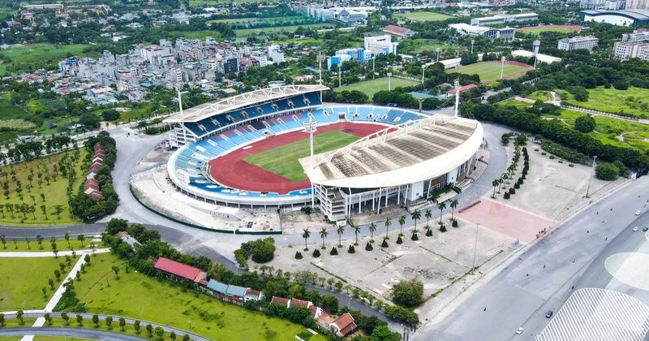
⚡
⚡
⚡
Ký hợp đồng tín dụng 13.500 tỷ đồng thực hiện dự án khu Mả Lạng và Chợ Gà – Gạo
Tối 22-10, tại TPHCM, Công ty CP Đầu tư và Kinh doanh nhà Khang Điền (Khang Điền) và Ngân hàng TMCP Công thương Việt Nam (VietinBank) tổ chức lễ ký kết hợp đồng cho vay dự án chỉnh trang đô thị khu Mả Lạng và Chợ Gà – Gạ
⚡
⚡
⚡
TP HCM sẽ chi 10.800 tỷ đồng bồi thường dự án Mả Lạng, chợ Gà - Gạo tuần sau
TP HCM sẽ chi 10.800 tỷ đồng bồi thường dự án Mả Lạng, chợ Gà - Gạo tuần sau TP HCM bắt đầu chi bồi thường cho người dân sống ở Mả Lạng, chợ Gà - Gạo với tổng số tiền dự kiến là 10.800 tỷ đồng vào tuần sau để sớm có mặt
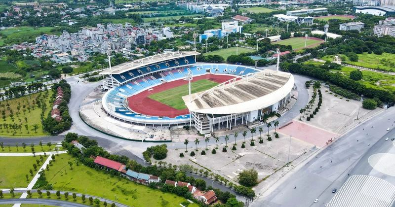
⚡
⚡
🔥
Tổng Bí thư, Chủ tịch nước Tô Lâm dự tọa đàm cấp cao với lãnh đạo doanh nghiệp tiêu biểu châu Âu và Bỉ
Facebook Twitter Lưu bài viết Bản in Copy link Theo đặc phái viên TTXVN, trong khuôn khổ chuyến thăm chính thức Liên minh châu Âu (EU) và Vương quốc Bỉ, sáng 22/10 (giờ địa phương), Tổng Bí thư, Chủ tịch nước Tô Lâm và Đ
🔥
Nâng cao năng lực cạnh tranh, tiếp cận thị trường quốc tế cho doanh nghiệp dược Việt Nam
Tại Diễn đàn Kinh tế Việt Nam - Thụy Sĩ 2026 (SVEF 2026), các lãnh đạo cấp cao của DKSH cũng chia sẻ những góc nhìn chiến lược và kinh nghiệm thực tiễn về phát triển hệ sinh thái y tế, nâng cao khả năng tiếp cận các sản
🔥
Vista Nam An Khánh mở rộng chuỗi tiện ích thiết thực với Vista Pickleball
TIN MỚI Tại ô đất CX100, Vista Pickleball bố trí 8 sân trên diện tích 2.000 m², trong khuôn viên thể thao và cảnh quan khoảng 8.000 m². Quy mô này cho phép nhiều nhóm người chơi cùng tập luyện, thi đấu, phục vụ cư dân và
🔥
Phát triển nhà ở cho thuê là trụ cột an sinh xã hội, hạn chế đầu cơ bất động sản
Thảo luận về 3 dự án Luật Đất đai (sửa đổi), Luật Nhà ở (sửa đổi) và Luật Kinh doanh bất động sản (sửa đổi), Thủ tướng Lê Minh Hưng nhấn mạnh yêu cầu hoàn thiện đồng bộ các quy định, bảo đảm hài hòa vai trò quản lý, điều
🔥
🔥
Xử lý 100 triệu giao dịch mỗi ngày, ngân hàng chịu áp lực bảo vệ dòng tiền
Thượng tá Triệu Mạnh Tùng, Phó Cục trưởng Cục An ninh mạng và phòng, chống tội phạm sử dụng công nghệ cao (A05, Bộ Công an) phát biểu tại sự kiện. Ảnh: Trung Anh/Mekong ASEAN Tại Hội thảo và Triển lãm Smart Banking 2026
🔥
🔥
🔥
🔥
🔥
🔥
Quảng Ninh: Đổi mới mô hình tăng trưởng, tạo nền tảng bứt phá trong giai đoạn mới
Phó Thủ tướng Chính phủ Nguyễn Văn Thắng yêu cầu thành phố Quảng Ninh tập trung tháo gỡ các điểm nghẽn, khơi thông nguồn lực, thúc đẩy các động lực tăng trưởng mới. Phó Thủ tướng Nguyễn Văn Thắng và đoàn công tác Chính p
🔥
Mỹ điều chuyển lực lượng khỏi Trung Đông, cân nhắc kịch bản nối lại tấn công Iran?
(Ảnh minh họa: Reuters) Hai nguồn thạo tin và hai quan chức Mỹ tiết lộ với NBC News , rằng các binh sĩ Mỹ đang đồn trú tại Jordan, Qatar và Kuwait nằm trong số những lực lượng được di dời. Tuy nhiên, Washington được cho
🔥
🔥
Điện Biên khen thưởng 70 cá nhân xuất sắc trong Chiến dịch 500 ngày đêm quy tập hài cốt liệt sĩ
Xác định đây là nhiệm vụ chính trị quan trọng, mang ý nghĩa nhân văn sâu sắc, tỉnh đã huy động sự vào cuộc của các cấp, ngành, địa phương, thành lập các tổ công tác, đội lấy mẫu chuyên trách, đồng thời tăng cường phối hợ
🔥
🔥
Vĩnh Long phát hiện 99 vi phạm trong kinh doanh vàng, xử phạt gần 2 tỉ đồng
Quản lý thị trường tỉnh Vĩnh Long phối hợp Công an tỉnh kiểm tra doanh nghiệp kinh doanh vàng trang sức, mỹ nghệ trên địa bàn tỉnh Vĩnh Long - Ảnh: Công an Vĩnh Long Ngày 22-10, thông tin từ Công an tỉnh Vĩnh Long cho ha
🔥
Nga-Trung Quốc ra tuyên bố chung sau khi Tổng thống Putin gặp Thủ tướng Lý Cường
"Hai bên kiên quyết lên án mọi hành vi cưỡng ép có sử dụng vũ lực từ bên ngoài nhằm phá vỡ tiến trình đoàn kết tại khu vực Á-Âu", tuyên bố chung nói trên, do Tân Hoa Xã đăng hôm nay 22.10, nêu rõ. Văn bản này còn khẳng đ
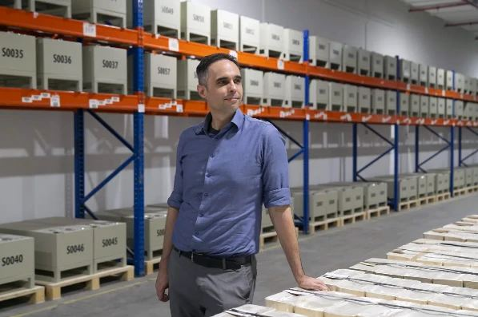
🔥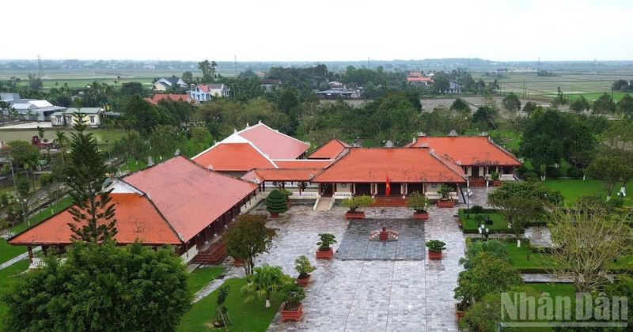
🔥Quảng Ngãi: Phê duyệt dự án sửa chữa, cải tạo Khu lưu niệm Thủ tướng Phạm Văn Đồng
Theo đó, dự án được triển khai theo 2 giai đoạn. Giai đoạn 1, đầu tư sửa chữa các hạng mục: nhà trưng bày cuộc đời và sự nghiệp, nhà tưởng niệm; nhà làm việc, chiếu phim và thư viện; nhà vọng cảnh; nhà trưng bày hiện vật
🔥
🔥
🔥
🔥
Victoria School giành hai giải thưởng tại Asian Innnovation Excellence Awards 2026
Ông Lê Nguyễn Trung Nguyên, Tổng Giám đốc Hệ thống Giáo dục Victoria School và Phó Tổng Giám đốc Công nghệ Hệ thống Giáo dục Victoria School Mark Tappin nhận hai cúp giải thưởng tại Asian Innovation Excellence Awards 202
🔥
Sở hữu ngôi nhà đầu tiên: Khi nỗ lực cá nhân cần sự tiếp sức từ tầm nhìn kiến tạo giá trị thực của chủ đầu tư
Theo ông Trần Mai Văn Thảo – Giám đốc Khối Kinh doanh thị trường Việt Nam, SkyWorld Development, sự dịch chuyển này đang đặt ra những yêu cầu mới đối với bài toán phát triển sản phẩm nhà ở. Với hơn 15 năm kinh nghiệm tro
🔥
🔥
🔥
Rộ tin Mỹ, Israel lên kế hoạch nối lại tấn công Iran sau bầu cử giữa kỳ ở Mỹ
Tổng thống Mỹ Donald Trump (phải) gặp Thủ tướng Israel Benjamin Netanyahu tại Nhà Trắng - Ảnh: REUTERS Hôm 21-10, tờ New York Times dẫn lời các quan chức Mỹ cùng các nguồn thạo tin cho biết quân đội Mỹ và Israel đã xây d
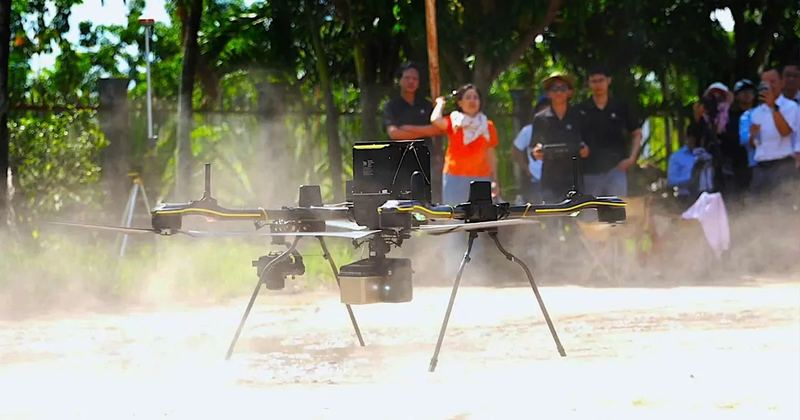
🔥
🔥
🔥
🔥
🔥
Mỹ áp trừng phạt mới với Iran, yêu cầu một số nhân viên sứ quán rời Ảrập Xêút
Theo hãng tin WANA, trong một tuyên bố đưa ra vào tối 21/10, Bộ Tài chính Mỹ thông báo các biện pháp trừng phạt mới liên quan đến Iran nhắm vào 5 cá nhân, 4 công ty và 9 tàu thuyền bị cáo buộc có liên quan đến “hạm đội b
🔥
Tin tức Thế giới 22/10: Ukraine nêu kịch bản thay thế việc gia nhập NATO
Ông Zelensky nêu kịch bản thay thế việc Ukraine gia nhập NATO Tổng thống Ukraine Volodymyr Zelensky. Ảnh: X/@ZelenskyyUa Tổng thống Volodymyr Zelensky ngày 20/10 tuyên bố Ukraine sẵn sàng xem xét cơ chế bảo đảm an ninh t
🔥
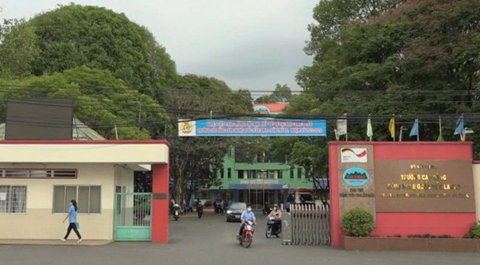
⚡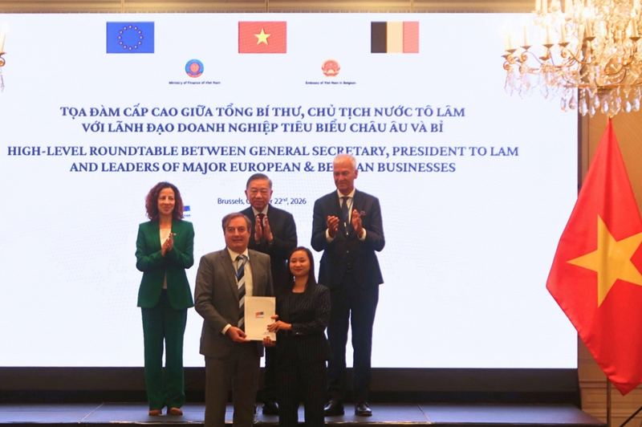
⚡
⚡
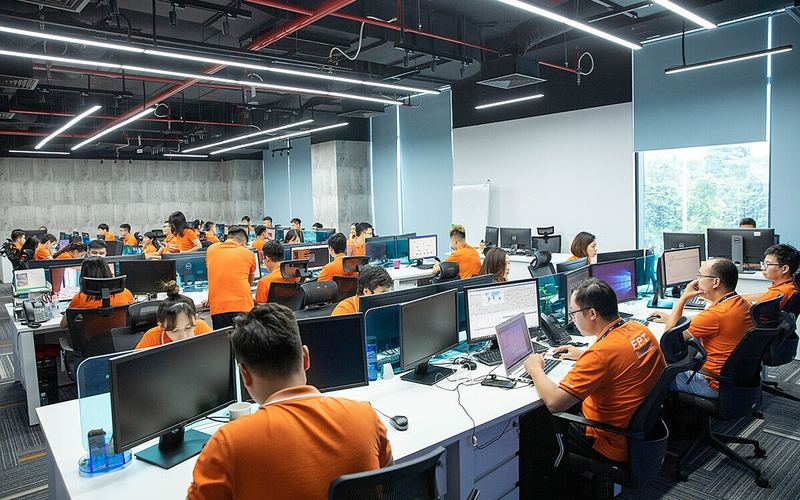
⚡
⚡
⚡
Tổng Bí thư, Chủ tịch nước Tô Lâm dự tọa đàm cấp cao với lãnh đạo doanh nghiệp tiêu biểu châu Âu và Bỉ
Trong khuôn khổ chuyến thăm chính thức Liên minh châu Âu (EU) và Vương quốc Bỉ, sáng 22/10 (giờ địa phương), Tổng Bí thư, Chủ tịch nước Tô Lâm và Đoàn đại biểu cấp cao Việt Nam đã dự tọa đàm cấp cao với lãnh đạo doanh ng
⚡
⚡
Đại biểu đề nghị cưỡng chế chủ đầu tư chây ì bàn giao quỹ bảo trì chung cư
(Dân trí) - Đại biểu đề nghị quỹ bảo trì chung cư có tài khoản phong tỏa riêng, quy định rõ thời hạn, thẩm quyền cưỡng chế bàn giao và cấm dùng tiền này cho quản lý, vận hành. Quỹ hàng trăm tỷ đồng, chủ đầu tư chậm bàn g
⚡
⚡
[Ảnh] Tọa đàm cấp cao giữa Tổng Bí thư, Chủ tịch nước Tô Lâm với lãnh đạo doanh nghiệp tiêu biểu châu Âu và Bỉ
Tổng Bí thư, Chủ tịch nước Tô Lâm chứng kiến trao thỏa thuận hợp tác giữa các doanh nghiệp . (Ảnh: TTXVN) Toạ đàm cấp cao giữa Tổng Bí thư, Chủ tịch nước Tô Lâm với lãnh đạo doanh nghiệp tiêu biểu châu Âu và Bỉ. (Ảnh: T
⚡
Ứng dụng công nghệ để tô điểm cho ý đồ sáng tạo trong nghệ thuật biểu diễn
Facebook Twitter Lưu bài viết Bản in Copy link Thời gian gần đây, các nhà hát trực thuộc Bộ Văn hóa, Thể thao và Du lịch đẩy mạnh đổi mới sáng tạo, kết hợp công nghệ hiện đại với bản sắc văn hóa dân tộc, mở ra hướng đi m
🔥
Thành công hợp long cầu đi bộ do Nutifood tài trợ, nối hai bờ sông Sài Gòn
Từ 5 giờ sáng 21.10, công tác hợp long nhịp chính cầu đi bộ qua sông Sài Gòn được triển khai theo phương án đã tính toán dựa trên diễn biến thủy triều. Trên mặt sông, sà lan chở tổ hợp kết cấu thép được xoay ngang, đưa v
🔥
🔥
🔥
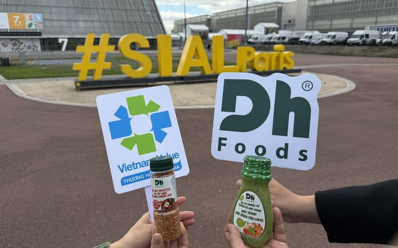
🔥Dh Foods mang gia vị Việt đến Sial Paris, nhắm mục tiêu 30% doanh thu xuất khẩu
Dh Foods mang gia vị Việt đến Sial Paris, nhắm mục tiêu 30% doanh thu xuất khẩu Ánh Dương | 22/10/2026 17:30 PM | Kinh doanh Theo dõi Cafebiz.vn trên Vừa lần đầu đạt danh hiệu Thương Hiệu Quốc Gia Việt Nam 2026, Dh Foods
🔥
🔥
Chuyển giao Cổng thông tin điện tử Đảng Cộng sản Việt Nam sang Báo Nhân Dân
Dự buổi lễ có Phó chánh Văn phòng Trung ương Đảng Võ Thành Hưng, lãnh đạo Cục Chuyển đổi số - Cơ yếu và Vụ Tổ chức - Hành chính. Về phía Báo Nhân Dân có ông Quế Đình Nguyên - Phó Tổng Biên tập, lãnh đạo Văn phòng và các
🔥
Quy định mới về thủ tục hải quan với hàng hóa mua gom của cư dân biên giới
Quy định mới về thủ tục hải quan với hàng hóa mua gom của cư dân biên giới - Ảnh minh họa Thông tư số 154/2026/TT-BTC đã sửa đổi một số quy định của Thông tư số 80/2019/TT-BTC về: Thủ tục hải quan, quản lý thuế, phí và l
🔥
Vingroup muốn xây nhà máy 500 triệu USD tại Philippines, công suất 200.000 xe/năm
Vingroup muốn xây nhà máy 500 triệu USD tại Philippines, công suất 200.000 xe/năm Phương Vy | 22/10/2026 16:56 PM | Kinh doanh Theo dõi Cafebiz.vn trên Nhà máy được đề xuất sẽ mở rộng mạng lưới sản xuất của Vingroup ra n
🔥
🔥
Triệt phá đường dây tiêu thụ khoảng 400 tấn heo bệnh, heo chết, thu lợi trên 10 tỷ đồng
Cơ quan Cảnh sát điều tra đọc lệnh khởi tố bắt tạm giam các bị can Phòng Cảnh sát điều tra tội phạm về tham nhũng, kinh tế, buôn lậu, môi trường (Phòng Cảnh sát kinh tế) Công an TP. Đồng Nai cho biết đơn vị vừa triệt phá
🔥
🔥
🔥
🔥
Hà Nội sắp xây hầm chui hơn 960 tỷ đồng, quy mô 6 làn xe nằm ngay sát tòa nhà từng cao nhất Việt Nam, dự kiến hoàn thành năm 2027
TIN MỚI Dự án hầm chui nút giao Mễ Trì – Dương Đình Nghệ – Vành đai 3 được Hà Nội phê duyệt ngày 7/1/2026, giao Ban Quản lý dự án đầu tư xây dựng công trình giao thông thành phố làm chủ đầu tư. Công trình có tổng mức đầu
🔥
Đại biểu Quốc hội nêu lý do chưa thể bỏ công chứng, chứng thực với giao dịch đất đai
TIN MỚI Văn bản công chứng là "cổng lọc dữ liệu đầu vào" Sáng 22/10, phát biểu thảo luận tổ, về Dự án Luật Đất đai (sửa đổi), đại biểu Đỗ Đức Hồng Hà (Hà Nội) nhấn mạnh về tính cấp thiết của công chứng bắt buộc đối với g
🔥
Triều Tiên công bố động thái mới sau khi đưa đơn vị vào 'vị trí khai hỏa'
Bà Kim Yo-jong hôm nay tuyên bố rằng Triều Tiên sẽ đặt các loa phóng thanh vào trạng thái sẵn sàng dọc giới tuyến "trong vài ngày tới", và Bình Nhưỡng đã đặt các "biện pháp đối phó mới" vào tình trạng báo động, nhưng khô
🔥
SACOMBANK nhận 3 danh hiệu về bán lẻ, chuyển đổi số và hỗ trợ doanh nghiệp
3 chiếc cúp danh giá thuộc khuôn khổ giải thưởng được trao cho SACOMBANK- Ảnh: DNCC Chương trình Ngân hàng Việt Nam tiêu biểu 2026 (Vietnam Outstanding Banking Awards) do Tập đoàn Dữ liệu Quốc tế (IDG) phối hợp với Hiệp
🔥
Một DN vốn 9.000 tỷ được chọn để nộp hồ sơ khai thác mỏ sắt lớn nhất Đông Nam Á, nơi tỷ phú Trần Đình Long từng muốn tham gia
Một DN vốn 9.000 tỷ được chọn để nộp hồ sơ khai thác mỏ sắt lớn nhất Đông Nam Á, nơi tỷ phú Trần Đình Long từng muốn tham gia Theo Yên Chi | 22/10/2026 14:55 PM | Kinh doanh Theo dõi Cafebiz.vn trên Một doanh nghiệp vừa
🔥
Phó Bí thư Tỉnh ủy Điện Biên Nguyễn Văn Thắng nhận thêm nhiệm vụ Bí thư Đảng ủy các cơ quan Đảng tỉnh
Theo Quyết định số 1381-QĐ/TU, ngày 1/10/2026 của Ban Thường vụ Tỉnh ủy, đồng chí Nguyễn Văn Thắng, Phó Bí thư Tỉnh ủy được chỉ định tham gia Ban Chấp hành Đảng bộ, Ban Thường vụ Đảng ủy và giữ chức Bí thư Đảng ủy các cơ
🔥
🔥
Đại biểu Quốc hội: “Không có dữ liệu đủ thật thì khó có giá đất sát thực tế”
Thảo luận về các dự án Luật Đất đai (sửa đổi), Luật Nhà ở (sửa đổi) và Luật Kinh doanh bất động sản (sửa đổi), các đại biểu Quốc hội nhấn mạnh, muốn định giá đất sát thực tế cần có dữ liệu giao dịch đủ tin cậy, đồng thời
🔥
🔥
5 năm sau cú bỏ cọc chấn động Thủ Thiêm, 4 lô 'đất vàng' trở lại sàn với mức giá ấn tượng
TIN MỚI UBND TP.HCM ban hành 4 quyết định về việc đấu giá quyền sử dụng đất đối với các khu đất có tổng diện tích hơn 30.000m2 tại Khu đô thị mới Thủ Thiêm, phường An Khánh, với mức giá khởi điểm tổng cộng gần 16.667 tỷ
🔥
Tổng thống Pháp thăm Saudi Arabia thúc đẩy hợp tác năng lượng và an ninh
Facebook Twitter Lưu bài viết Bản in Copy link Ngày 21/10, trong khuôn khổ chuyến thăm Saudi Arabia, Tổng thống Pháp Emmanuel Macron đã có cuộc hội đàm với Thái tử nước chủ nhà Mohammed bin Salman tại Cung điện Al Yamama
🔥
Khu Ngoại quan Colon mở cơ hội đưa hàng Việt Nam vào thị trường Mỹ Latinh
Facebook Twitter Lưu bài viết Bản in Copy link Với vị trí chiến lược tại cửa ngõ Đại Tây Dương của kênh đào Panama, cùng hệ thống cảng biển và mạng lưới logistics đa phương thức, khu Ngoại quan Colon đang mở ra cơ hội để
🔥
Cảnh xe cộ chật vật né ổ gà trên tuyến đường vừa xảy ra tai nạn chết người ở Hà Nội
XEM CLIP: Theo ghi nhận của PV chiều 21/10, Quốc lộ 6, đoạn từ nút giao với đường Vành đai 4 đến cầu Mai Lĩnh (phường Yên Nghĩa, Hà Nội), tồn tại nhiều ổ gà đọng nước, khiến giao thông ùn tắc, tiềm ẩn nguy cơ xảy ra tai
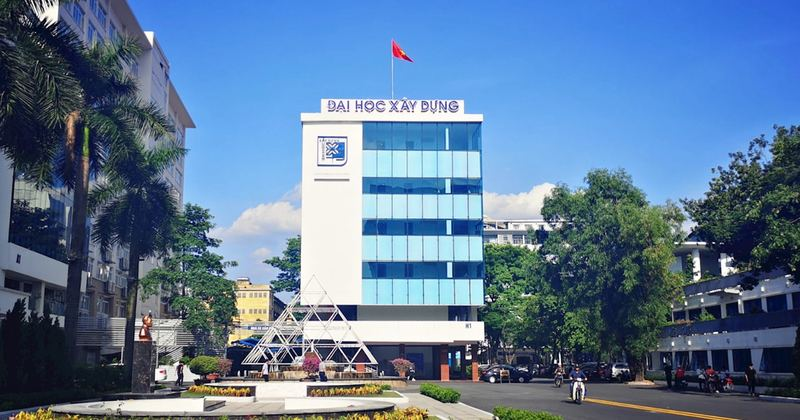
⚡Trường Đại học Xây dựng Hà Nội quy hoạch 2 khu đất gần 3,6ha, dự kiến xây tòa nhà cao 20 tầng
TIN MỚI UBND phường Bạch Mai (Hà Nội) vừa chấp thuận quy hoạch tổng mặt bằng tỷ lệ 1/500 của Trường Đại học Xây dựng Hà Nội tại hai khu đất số 55 Giải Phóng và 72 Trần Đại Nghĩa. Theo hồ sơ quy hoạch, tổng diện tích nghi
⚡
⚡
⚡
Vượt hơn 1.000 km trả lại nhẫn cho khách Tây làm rơi dưới đáy biển Đà Nẵng
Chia sẻ với Tiền Phong tối 22/10, Ban quản lý bán đảo Sơn Trà và các bãi biển du lịch Đà Nẵng (BQL) cho hay một nhân viên của đơn vị vừa tìm được chiếc nhẫn du khách đánh rơi và vượt hơn 1.000 km vào Phú Quốc để trao trả
⚡
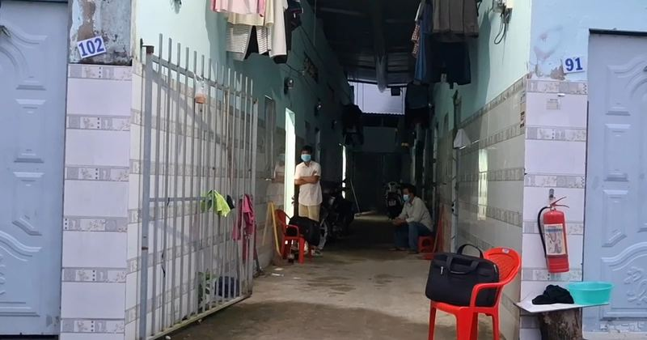
⚡
⚡
Ninh Bình: Chính quyền xã nói về xưởng đóng tàu quy mô lớn, hợp đồng thuê đất trái phép
TIN MỚI Trao đổi với phóng viên Báo Tiền Phong, ông Nguyễn Văn Dũng, Phó Chủ tịch UBND xã Nghĩa Sơn, tỉnh Ninh Bình cho biết sau sáp nhập, địa bàn xã có tuyến sông kéo dài hơn 15km; tổng chiều dài hai bên tuyến sông Ninh
⚡
Tổng Bí thư, Chủ tịch nước Tô Lâm gặp Chủ tịch Ủy ban châu Âu Ursula von der Leyen
Chủ tịch Ủy ban châu Âu Ursula von der Leyen nhiệt liệt chào mừng Tổng Bí thư, Chủ tịch nước Tô Lâm và Đoàn đại biểu cấp cao Việt Nam thăm chính thức EU; đánh giá cao những bước phát triển tích cực trong quan hệ Việt Nam
⚡
⚡
⚡
TPHCM đón tàu HMS SPEY nhân dịp Việt Nam - Anh kỷ niệm 1 năm nâng cấp quan hệ
Bày tỏ niềm vui chào đón đoàn, Phó Chủ tịch UBND TPHCM Trần Văn Bảy nhấn mạnh, chuyến thăm của tàu HMS SPEY mang ý nghĩa đặc biệt khi diễn ra ở thời điểm Việt Nam và Vương quốc Anh hướng tới kỷ niệm 1 năm nâng cấp quan h
⚡
Vụ đổ phế thải khu đô thị Thanh Hà: Chủ tịch HĐND Hà Nội truy trách nhiệm đến cùng
Ngày 22/10, tại phiên chất vấn về môi trường của Thường trực HĐND TP Hà Nội, việc tiếp nhận, đổ thải trong khu đô thị Thanh Hà là nội dung được truy hỏi liên tiếp. Đây cũng là nội dung được phát trong phóng sự chiếu lúc
⚡
⚡
Quy hoạch 22 nhà ga đường sắt đô thị Hà Nội: Người dân được góp ý những gì?
Facebook Twitter Lưu bài viết Bản in Copy link Hà Nội đang lấy ý kiến cộng đồng dân cư về hồ sơ quy hoạch chi tiết tỷ lệ 1/500 của 22 nhà ga ưu tiên thuộc 5 tuyến đường sắt đô thị (metro) số 1, 2, 8, 10 và 14. Hồ sơ được
 ⚡
⚡
Tổng Bí thư, Chủ tịch nước Tô Lâm gặp Chủ tịch Ủy ban châu Âu Ursula von der Leyen
Chủ tịch Ủy ban châu Âu Ursula von der Leyen nhiệt liệt chào mừng Tổng Bí thư, Chủ tịch nước Tô Lâm và Đoàn đại biểu cấp cao Việt Nam thăm chính thức EU; đánh giá cao những bước phát triển tích cực trong quan hệ Việt Nam
⚡
[Ảnh] Bộ trưởng Ngoại giao Lê Hoài Trung gặp Phó Thủ tướng, Bộ trưởng Ngoại giao Bỉ
Bộ trưởng Ngoại giao Lê Hoài Trung và Phó Thủ tướng, Bộ trưởng Ngoại giao Bỉ Maxime Prévot trao đổi trước cuộc gặp tại Brussels ngày 22/10. (Ảnh: TTXVN) Bộ trưởng Lê Hoài Trung đề nghị Bộ Ngoại giao hai nước phát huy vai
⚡
Sớm đưa Trung tâm Tài chính quốc tế đi vào vận hành thực chất, an toàn và hiệu quả
Phó Thủ tướng Nguyễn Văn Thắng chủ trì phiên họp thứ tư của Hội đồng điều hành Trung tâm Tài chính quốc tế. (Ảnh: chinhphu.vn/Đức Tuân) Theo báo cáo của Bộ Tài chính, Bộ đã chủ trì, phối hợp các đơn vị liên quan báo cáo
⚡
Hợp tác tăng cường năng lực bảo đảm an ninh hàng hải cho Cảnh sát biển Việt Nam
Đây là sáng kiến hợp tác đa phương có quy mô lớn với khoản viện trợ không hoàn lại trị giá 646 triệu Yên Nhật (tương đương 106 tỷ đồng Việt Nam) do Chính phủ Nhật Bản tài trợ, kéo dài trong giai đoạn 3 năm (2026-2029) và
⚡
⚡
⚡
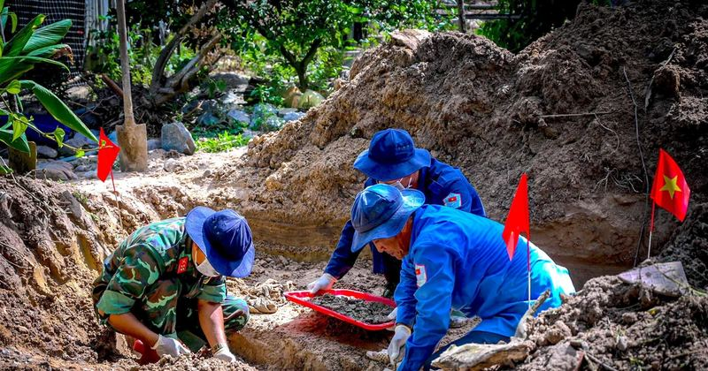
⚡An Giang quy tập 331 hài cốt liệt sĩ, hoàn thành lấy mẫu giám định ADN trước nửa năm
Lấy mẫu giám định ADN về đích trước nửa năm Các con số được công bố tại Hội nghị tổng kết nhiệm vụ tìm kiếm, quy tập và xác định danh tính hài cốt liệt sĩ còn thiếu thông tin năm 2026; sơ kết giai đoạn 1 “Chiến dịch 500
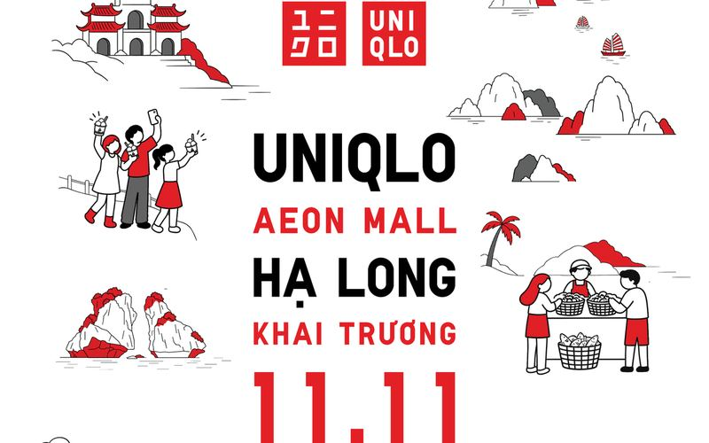
⚡Sau Thanh Hóa, UNIQLO tiếp tục mở rộng tại miền Bắc với cửa hàng thứ 34 ở Hạ Long
Sau Thanh Hóa, UNIQLO tiếp tục mở rộng tại miền Bắc với cửa hàng thứ 34 ở Hạ Long Ánh Dương | 22/10/2026 19:00 PM | Kinh doanh Theo dõi Cafebiz.vn trên Tiếp nối cam kết mang triết lý LifeWear đến gần hơn với khách hàng t
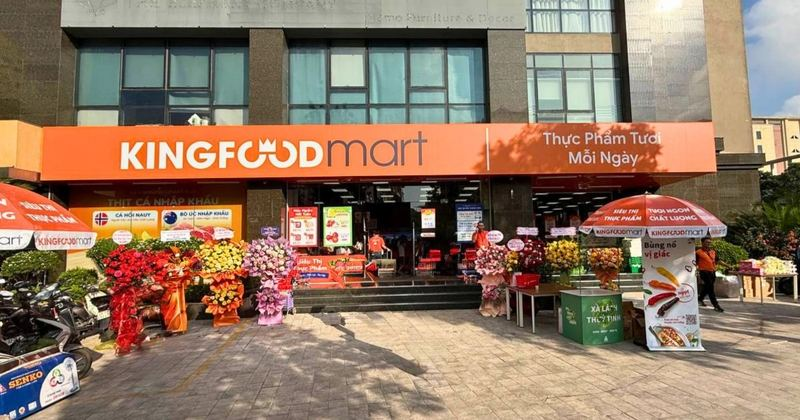
⚡
⚡
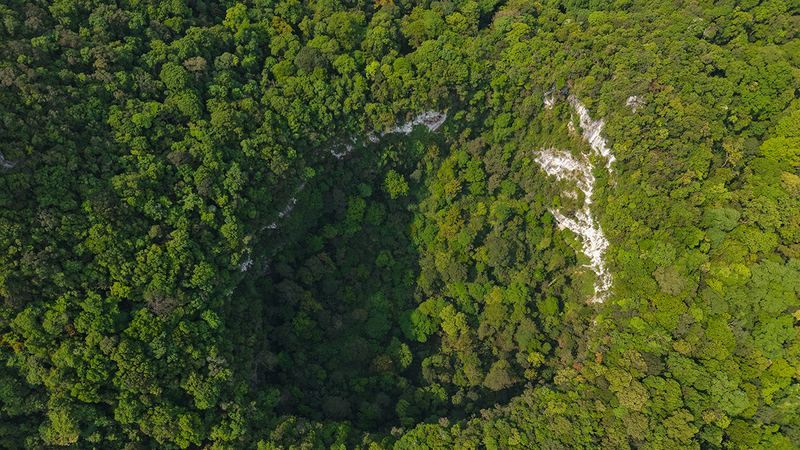
⚡
⚡
⚡
⚡
⚡
Trực tiếp Công an Hà Nội vs Thanh Hóa 1-1 (H2): Trọng tài từ chối phạt đền cho Thanh Hoá
22/10/2026 21:07 foul HẾT GIỜ!!! CAHN 1-1 THANH HÓA CAHN bất lực trong việc ghi thêm bàn và chấp nhận chia điểm trên sân Hàng Đẫy. Sau 2 trận liên tiếp thua và hòa ở V.League, thầy trò HLV Polking đã bị Ninh Bình bỏ lại
⚡
Thủ tướng: Người trẻ mất rất nhiều thời gian để tích lũy mới mua được nhà
Chiều 22/10, Quốc hội tiếp tục thảo luận tại tổ về 3 dự án: Luật Đất đai (sửa đổi), Luật Nhà ở (sửa đổi) và Luật Kinh doanh bất động sản (sửa đổi). Phát biểu tại tổ, Thủ tướng Lê Minh Hưng cho biết đây là 3 dự án luật có
Sửa luật để giải quyết dự án “đắp chiếu”, ưu đãi mạnh phát triển nhà cho thuê
Thảo luận về các dự án luật liên quan đến đất đai, nhà ở và kinh doanh bất động sản, Chủ tịch Quốc hội Trần Thanh Mẫn nhấn mạnh mục tiêu tháo gỡ những điểm nghẽn đang khiến hàng nghìn dự án "đắp chiếu", khơi thông nguồn
Siêu dự án gần 1 triệu tỷ đồng tại Hà Nội có diễn biến mới: Vinhomes muốn ký hợp đồng với 2 công ty, dùng tài sản bảo đảm cho công ty con
Siêu dự án gần 1 triệu tỷ đồng tại Hà Nội có diễn biến mới: Vinhomes muốn ký hợp đồng với 2 công ty, dùng tài sản bảo đảm cho công ty con Theo Anh Khôi | 22/10/2026 16:50 PM | Kinh doanh Theo dõi Cafebiz.vn trên Siêu dự
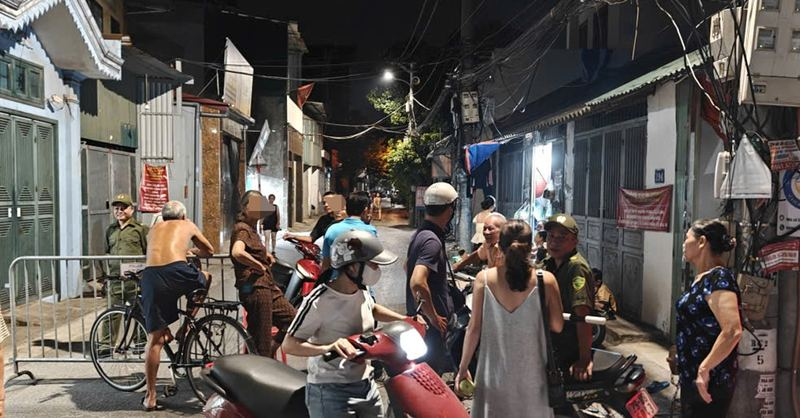
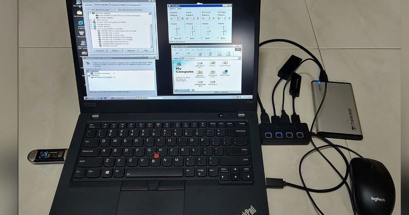
🔥Vibe coding đưa Windows 98 “du hành tới tương lai”, thử nghiệm cả Thunderbolt 4
Vibe coding đưa Windows 98 “du hành tới tương lai”, thử nghiệm cả Thunderbolt 4 Theo Tuấn Nguyễn | 22/10/2026 15:02 PM | Công nghệ Theo dõi Cafebiz.vn trên Với sự hỗ trợ của Claude và Codex, một lập trình viên đã viết dr
C
🔥
🔥
🔥
🔥
🔥
🔥
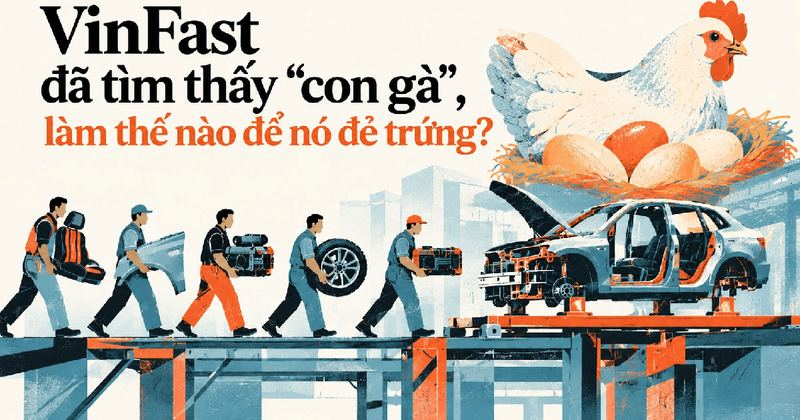
🔥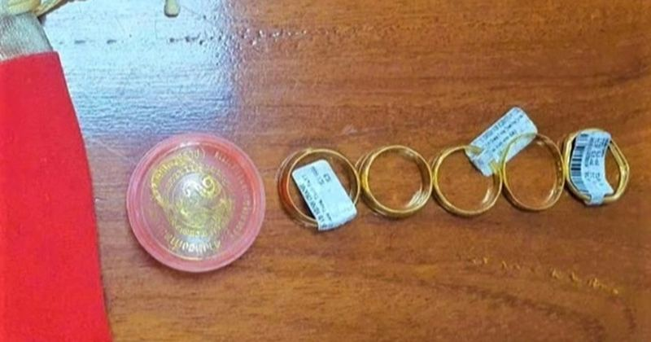
🔥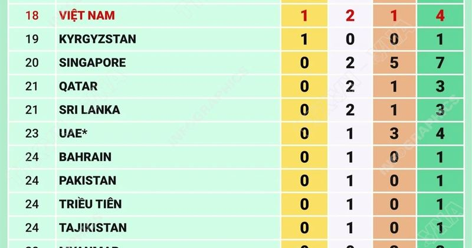
🔥
🔥
VNDIRECT: Lợi nhuận 9 tháng đạt 2.199 tỷ đồng, tái tạo năng lực cho chu kỳ mới
Lợi nhuận trước thuế 9 tháng năm 2026 của VNDIRECT đạt 2.199 tỷ đồng, tăng 3% so với cùng kỳ, hoàn thành 73% kế hoạch năm. Trước áp lực thanh khoản suy giảm, lãi suất huy động tăng, công ty điều chỉnh nguồn vốn, đồng thờ
🔥
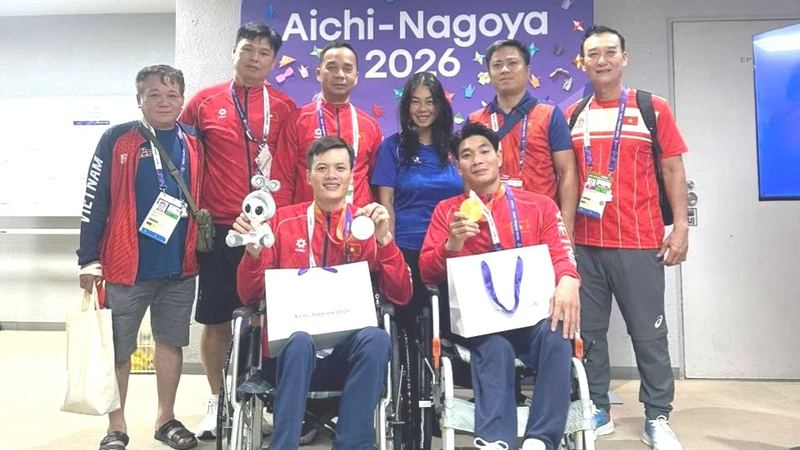
🔥
🔥
[Video] Quy hoạch đường sắt Hà Nội: 11 tuyến, 39 nhà ga, tốc độ cao nhất 350 km/h
Các tuyến xây mới dự kiến sử dụng đường đôi, khổ ray tiêu chuẩn 1.435 mm. Tuyến tốc độ cao Bắc – Nam có tốc độ thiết kế tối đa 350 km một giờ; tuyến Hà Nội – Quảng Ninh từ 200 km/h trở lên. Các tuyến còn lại có tốc độ th
🔥
🔥
Robot 'Huyền thoại võ thuật' lộ diện: 8 giờ làm vệ sĩ, nhảy từ độ cao 4 mét
Ngày 21/10, công ty công nghệ Trung Quốc Unitree Robotics giới thiệu H2-X Kungfu Legend Guardian - mẫu robot hình người được định hướng cho các nhiệm vụ bảo vệ và an ninh cá nhân. Robot vệ sĩ "Huyền thoại võ thuật" H2-X
🔥
Khởi tố nữ tài xế lái ô tô bỏ chạy khi cảnh sát giao thông xử lý lỗi quá tốc độ
Tài xế Lê Kim A. làm việc với cơ quan công an - Ảnh: Công an tỉnh Lào Cai Công an tỉnh Lào Cai cho biết ngày 21-10, Cơ quan Cảnh sát điều tra Công an tỉnh đã ra quyết định khởi tố vụ án, khởi tố bị can đối với tài xế Lê
🔥
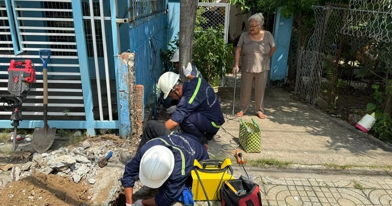
⚡
⚡
Chân dung doanh nhân muốn huy động 1.000 tỷ đồng/năm cho bóng đá Việt Nam
(Dân trí) - Ông Nguyễn Đức Thụy, doanh nhân đầu tư trong nhiều lĩnh vực, muốn huy động 600-1.000 tỷ đồng mỗi năm cho bóng đá Việt Nam nếu trở thành Chủ tịch VFF nhiệm kỳ 2026-2030. Tham gia tranh cử Chủ tịch Liên đoàn Bó
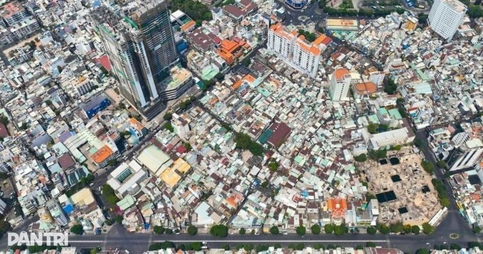
⚡Lãnh đạo TPHCM: Chi trả bồi thường dự án Mả Lạng, Chợ Gà - Gạo từ tuần tới
(Dân trí) - Phó Chủ tịch UBND TPHCM cho biết, thành phố sẽ bắt đầu chi trả cho người dân ảnh hưởng bởi dự án chỉnh trang khu Mả Lạng và Chợ Gà - Gạo từ đầu tuần tới. Chiều 22/10, Phó Bí thư Thường trực Thành ủy TPHCM Lê
⚡
⚡
Mở rộng không gian hợp tác Việt Nam-Ba Lan sang các lĩnh vực công nghệ cao
Facebook Twitter Lưu bài viết Bản in Copy link Nhân dịp Thủ tướng Ba Lan Donald Tusk sẽ thăm chính thức Việt Nam từ ngày 24-26/10 theo lời mời của Thủ tướng Chính phủ Lê Minh Hưng, phóng viên TTXVN đã có cuộc phỏng vấn Đ
⚡
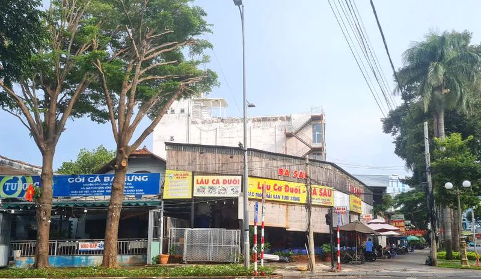
Phường Vũng Tàu yêu cầu doanh nghiệp bàn giao mặt bằng số 06 Trần Hưng Đạo trước ngày 31-10
Mặt bằng nhà số 6 Trần Hưng Đạo, phường Vũng Tàu hiện đang được cho thuê bán lẩu cá đuối Thông báo của UBND phường Vũng Tàu gửi doanh nghiệp khẳng định, việc bàn giao mặt bằng nhằm thực hiện nghiêm các văn bản pháp lý đã
Bộ Nội vụ: Cải cách hành chính ở Đồng Tháp phải giảm thời gian, chi phí cho người dân
Đoàn công tác khảo sát robot AI hỗ trợ người dân hỏi đáp về hồ sơ giấy tờ TTHC tại Trung tâm Phục vụ hành chính công phường Trung An - Ảnh: N. Linh Chiều 22/10, Đoàn công tác của Bộ Nội vụ do ông Phạm Minh Hùng, Vụ trưởn
UOA Group được vinh danh tại PropertyGuru 2026 với nhiều giải thưởng bất động sản bền vững
TIN MỚI Tập đoàn nhận thêm 3 giải thưởng cho dự án văn phòng hạng A mới UOA Parc Tower và giải pháp không gian làm việc cao cấp Komune . Thành tích này đánh dấu một cột mốc quan trọng khi UOA hướng tới kỷ niệm 10 năm hoạ
C
Gập 10.000 lần, iPhone Duo để lại "dấu tích" gì? Sự thật đằng sau bài kiểm tra khắc nghiệt nhất
Gập 10.000 lần, iPhone Duo để lại "dấu tích" gì? Sự thật đằng sau bài kiểm tra khắc nghiệt nhất Thiên Minh | 22/10/2026 15:45 PM | Công nghệ Theo dõi Cafebiz.vn trên Chỉ mới ra mắt chưa lâu, chiếc điện thoại màn hình gập
🔥
🔥
Gặp 'anh Tuấn' - cựu binh Tàu không số được nhắc tên trong 'Nhật ký Đặng Thùy Trâm'
Ông Trần Ngọc Tuấn (bìa trái) vinh dự được gặp Chủ tịch nước Trương Tấn Sang trong một dịp kỷ niệm Đường Hồ Chí Minh trên biển - Ảnh: HOÀNG DƯƠNG chụp lại Ngày mai là kỷ niệm 65 năm ngày mở Đường Hồ Chí Minh trên biển (2
🔥
🔥
Phó Chủ tịch Hiệp hội Bất động sản: Kỳ vọng giá nhà giảm sâu 30 - 50% là không có cơ sở thực tiễn
Nhiều người có tiền gửi tiết kiệm, mua vàng chờ giá nhà giảm 30-50%: Phó chủ tịch Hiệp hội BĐS nói gì? Phan Trang | 22/10/2026 14:59 PM | Kinh doanh Theo dõi Cafebiz.vn trên Chuyên gia cho rằng việc chờ đợi giá nhà giảm
🔥
Dừng toàn bộ việc xây dựng tuyến metro đã hoàn thiện 71%, dự án 2.222 tỷ đồng có nguy cơ bị "đập đi xây lại", trễ hẹn 7 năm so với dự kiến
Dừng toàn bộ việc xây dựng tuyến metro đã hoàn thiện 71%, dự án 2.222 tỷ đồng có nguy cơ bị "đập đi xây lại", trễ hẹn 7 năm so với dự kiến Theo Thiên Di | 22/10/2026 14:51 PM | Kinh doanh Theo dõi Cafebiz.vn trên Một sai
🔥
Phú Thọ: Khởi tố, bắt tạm giam đối tượng có hành vi ngược đãi, hành hạ hai con ruột
Bị can Bùi Văn Tuấn tại cơ quan công an - Ảnh: Công an tỉnh Phú Thọ Theo Công an tỉnh Phú Thọ, qua công tác nắm tình hình và tiếp nhận tin báo của người dân, lực lượng công an phát hiện vụ việc có dấu hiệu ngược đãi, hàn
🔥
Loạt website chính phủ châu Âu khẩn cấp tạm ngừng hoạt động: Lý do xuất phát từ công ty của một kỹ sư người Việt
Loạt website chính phủ châu Âu khẩn cấp tạm ngừng hoạt động: Lý do xuất phát từ công ty của một kỹ sư người Việt Theo Yên Chi | 22/10/2026 13:45 PM | Kinh doanh Theo dõi Cafebiz.vn trên Calif, công ty an ninh mạng do kỹ
 🔥
🔥
Một công ty chứng khoán thua lỗ 17 quý liên tiếp, nâng lỗ lũy kế lên hơn 183 tỷ đồng
Một công ty chứng khoán thua lỗ 17 quý liên tiếp, nâng lỗ lũy kế lên hơn 183 tỷ đồng Theo An Thái | 22/10/2026 13:43 PM | Kinh doanh Theo dõi Cafebiz.vn trên Dù doanh thu tăng trưởng và mức lỗ đã thu hẹp đáng kể so với c
 🔥
🔥
Một công ty chứng khoán thua lỗ 17 quý liên tiếp, nâng lỗ lũy kế lên hơn 183 tỷ đồng
TIN MỚI CTCP Chứng khoán CV (CVS) vừa công bố báo cáo tài chính quý 3/2026 với doanh thu hoạt động đạt hơn 8,3 tỷ đồng, tăng gần 7% so với cùng kỳ năm trước. Trong đó, lãi từ các khoản đầu tư nắm giữ đến ngày đáo hạn (HT
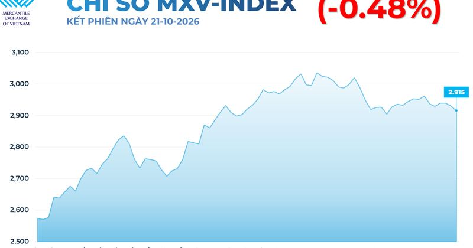
🔥
🔥
Cục Thông tin và Truyền thông Chính phủ thúc đẩy chuyển đổi số, nâng cao hiệu quả công tác tham mưu
Cục trưởng Cục Thông tin và Truyền thông Chính phủ, Tổng Biên tập Báo Điện tử Chính phủ Nguyễn Hồng Sâm phát biểu khai mạc tập huấn - Ảnh: chinhphu.vn/Thiện Tâm Phát biểu tại chương trình, Cục trưởng Cục Thông tin và Tru
🔥
Vận hành trường nội trú liên cấp - gieo tri thức, thắp sáng tương lai vùng biên
Phó Thủ tướng Lê Tiến Châu đến kiểm tra tiến độ xây dựng và vận hành trường phổ thông nội trú liên cấp Tiểu học và Trung học cơ sở xã Môn Sơn - Ảnh: chinhphu.vn/Thu Sa Ngay sau khi Bộ Chính trị ban hành Thông báo kết luậ
🔥
Phó Thủ tướng Hồ Quốc Dũng: Xây dựng kịch bản cụ thể, chủ động ứng phó từng loại hình thiên tai
Phó Thủ tướng Hồ Quốc Dũng chủ trì cuộc họp với các bộ, cơ quan về Kế hoạch phòng, chống thiên tai quốc gia giai đoạn 2026-2030 - Ảnh: chinhphu.vn/Gia Huy Dự cuộc họp có Thứ trưởng Bộ Nông nghiệp và Môi trường Nguyễn Hoà
🔥
🔥
🔥
🔥
SHB nhận giải thưởng Chất lượng thanh toán quốc tế xuất sắc (STP Award) từ Citibank
Giải thưởng STP là một trong những giải thưởng uy tín được Citibank trao cho các ngân hàng có tỷ lệ điện thanh toán quốc tế đạt chuẩn xuất sắc, được xử lý tự động xuyên suốt với độ chính xác cao, hạn chế tối đa các trườn
🔥
🔥
🔥
🔥
Sửa Luật Đất đai: Người bị thu hồi đất có thể được tái định cư tại chỗ, hoán đổi đất
Dự thảo Luật Đất đai (sửa đổi) được đề xuất bổ sung các phương án bồi thường, hỗ trợ khi Nhà nước thu hồi đất, trong đó người có đất bị thu hồi có thể được bố trí tái định cư tại chỗ hoặc hoán đổi đất theo quy định. Cùng
🔥
'Quy tắc 4 lần' quảng cáo nhà cái và thu nhập tiền tỉ của Captain, Người Thỏ ở XoilacTV
Khu làm việc của bình luận viên Người Thỏ - Ảnh: A05 Bộ Công an Không chỉ bình luận diễn biến trận đấu, các bình luận viên XoilacTV còn phải giới thiệu nhà cái cá cược trực tuyến ngay trong thời gian phát sóng. Việc đọc
🔥
🔥
Lợi nhuận toàn ngành sụt giảm mạnh, nhà đầu tư thua lỗ, CTCK vẫn kiếm bẫm từ cho vay
Lợi nhuận toàn ngành sụt giảm mạnh, nhà đầu tư thua lỗ, CTCK vẫn kiếm bẫm từ cho vay Theo Hà Linh | 22/10/2026 08:54 AM | Kinh doanh Theo dõi Cafebiz.vn trên Tổng lãi từ cho vay và phải thu tại các CTCK đã tăng 11 quý li
🔥
🔥
🔥
🔥
🔥
'Hòn đảo sầu riêng' của Trung Quốc đang phát triển thần tốc chỉ sau vài năm
'Hòn đảo sầu riêng' của Trung Quốc đang phát triển thần tốc chỉ sau vài năm Quảng Định | 22/10/2026 08:10 AM | Kinh doanh Theo dõi Cafebiz.vn trên Chỉ sau vài năm, diện tích trồng sầu riêng trên đảo Hải Nam, Trung Quốc đ
🔥
🔥
🔥
🔥
🔥
🔥
🔥
Một doanh nghiệp trúng tới 46 gói thầu từ Sungroup, Vingroup, Masterise trong vòng 1 năm, thu về hơn 34.300 tỷ trong 12 tháng gần nhất
Một doanh nghiệp trúng tới 46 gói thầu từ Sungroup, Vingroup, Masterise trong vòng 1 năm, thu về hơn 34.300 tỷ trong 12 tháng gần nhất Theo Ngọc Điệp | 22/10/2026 07:21 AM | Kinh doanh Theo dõi Cafebiz.vn trên Theo thống
🔥
🔥
Ngày 22/10, gửi 100 triệu đồng tại MB, VPBank, Techcombank, Sacombank, SHB, ACB nhận bao nhiêu tiền lãi sau 24 tháng?
TIN MỚI Gửi tại quầy: VPBank có lãi suất cao nhất Theo biểu lãi suất được cung cấp, tại kỳ hạn 24 tháng, VPBank niêm yết lãi suất tiền gửi tại quầy ở mức 6,9%/năm. Với khoản tiền gửi 100 triệu đồng, khách hàng dự kiến nh
🔥
🔥
🔥
🔥
🔥
🔥
Chiến dịch 'không còn đường lùi' giúp Ukraine giải vây cho vành đai pháo đài
Chiến dịch 'không còn đường lùi' giúp Ukraine giải vây cho vành đai pháo đài Chiến dịch phản công Vivaldi giúp Ukraine bẻ gãy một gọng kìm của Nga nhằm vào vành đai pháo đài Donetsk, tạo cơ hội để củng cố phòng tuyến. Qu
🔥
🔥
Cộng đồng người Việt Nam tại châu Âu phát huy vai trò cầu nối hữu nghị và hợp tác
Tại cuộc gặp, Đại sứ Đặc mệnh toàn quyền Việt Nam tại Bỉ, Trưởng Phái đoàn Việt Nam tại Liên minh châu Âu Nguyễn Hương Trà cho biết, tại châu Âu hiện có khoảng 1,5 triệu người Việt Nam, là một trong những cộng đồng người
🔥
⚡
⚡
⚡
Cơ hội cho nông sản, thủy sản và thực phẩm Việt Nam tại thị trường Hàn Quốc
Facebook Twitter Lưu bài viết Bản in Copy link Ngày 22/10, Tuần hàng Việt Nam tại Hàn Quốc 2026 (Vietnam Goods Week in Korea 2026) đã chính thức khai mạc tại siêu thị Lotte Mart-Chi nhánh Ga Seoul, Seoul, Hàn Quốc. Chươn
Nhật Bản viện trợ 646 triệu Yên tăng cường năng lực thực thi pháp luật trên biển
Chiều 22/10, tại Hà Nội, Đại sứ quán Nhật Bản tại Việt Nam tổ chức lễ ký kết dự án “Tăng cường năng lực cho các cơ quan thực thi pháp luật trên đường thủy nội địa và trên biển tại Việt Nam”. Theo thỏa thuận, Chính phủ Nh
Phó Thủ tướng Nguyễn Văn Thắng chủ trì phiên họp thứ tư của Hội đồng điều hành Trung tâm Tài chính quốc tế
Phó Thủ tướng Nguyễn Văn Thắng chủ trì phiên họp thứ tư của Hội đồng điều hành Trung tâm Tài chính Quốc tế - Ảnh: chinhphu.vn/Đức Tuân Theo báo cáo của Bộ Tài chính, Bộ đã chủ trì, phối hợp với các đơn vị liên quan báo c
Tầm vóc Di tích lịch sử Địa điểm thành lập Chi bộ Đông Dương Cộng sản Đảng
Hội thảo nhằm góp phần làm sáng tỏ sâu sắc hơn tầm vóc phong trào Phú Riềng Đỏ và Di tích lịch sử Địa điểm thành lập Chi bộ Đông Dương Cộng sản Đảng trong tiến trình cách mạng Việt Nam; tăng cường những luận cứ có giá tr
Chủ tịch Quốc hội: Không thể mặc nhiên coi người chưa có sổ đỏ là lấn chiếm đất
Chủ tịch Quốc hội dự thảo luận tại tổ TP.HCM - Ảnh: QUANG PHÚC Phát biểu tại phiên thảo luận sáng 22-10 về các dự án Luật Đất đai (sửa đổi) , Luật Nhà ở và Luật Kinh doanh bất động sản sửa đổi, Chủ tịch Quốc hội đánh giá
Hoàn thiện quy định về sở hữu chung, riêng và quản lý quỹ bảo trì nhà chung cư
Đại biểu Quốc hội Vũ Văn Tiến (Hải Phòng) phát biểu tại thảo luận tổ Đa số ý kiến đại biểu Quốc hội cho rằng, dự thảo Luật đã thể chế hóa các chủ trương của Đảng, Nhà nước về hoàn thiện thể chế kinh tế thị trường định hư
Nguyên nhân vụ chặn ô tô rồi cầm dao đâm liên tiếp làm tài xế tử vong ngay trên ghế lái
Cơ quan công an đã tạm giữ Trần Quý Hoan - Ảnh: MINH TUỆ Ngày 22-10, Phòng Cảnh sát hình sự Công an Hà Nội đã tạm giữ Trần Quý Hoan (sinh năm 1979, thường trú xã Xuân Mai, chỗ ở tại phường Bồ Đề - Hà Nội) để điều tra về
1 cổ phiếu DN gốc quân đội tăng 8 phiên liên tiếp, giá trị công ty tăng hơn 1.300 tỷ đồng trước thềm đại hội bất thường
1 cổ phiếu DN gốc quân đội tăng 8 phiên liên tiếp, giá trị công ty tăng hơn 1.300 tỷ đồng trước thềm đại hội bất thường Theo Anh Khôi | 22/10/2026 08:06 AM | Kinh doanh Theo dõi Cafebiz.vn trên Cổ phiếu của một công ty c
Việt Nam đang xây một công trình có mái vòm siêu mỏng, siêu chịu lực có thể phản chiếu màu nước theo từng thời điểm trong ngày do KTS có tầm ảnh hưởng nhất thế giới thiết kế
TIN MỚI Đến nay, dự án Nhà hát Opera Hà Nội và Công viên văn hóa - nghệ thuật chuyên đề do Sun Group đầu tư đã khởi công được hơn 1 năm. Công trình có tổng mức đầu tư 12.756 tỷ đồng, quy mô khoảng 19,1ha tại khu vực hồ Đ
Tây Ninh xây tuyến đường kết nối hành lang công nghiệp, đô thị Mộc Bài-Xuyên Á
Facebook Twitter Lưu bài viết Bản in Copy link Tây Ninh đang triển khai tuyến đường kết nối hành lang công nghiệp, đô thị Mộc Bài-Xuyên Á có tổng chiều dài toàn tuyến khoảng 123,5km. Theo Ủy ban Nhân dân tỉnh Tây Ninh, d
⚡
⚡
⚡
⚡
⚡
Bộ Công an thông tin về vụ án 'cho vay nặng lãi trong giao dịch dân sự' xảy ra tại 4 thành phố
Đối tượng Trần Văn Công - Ảnh: BCA Ngày 22/10, Bộ Công an cho biết, qua công tác nắm tình hình trên không gian mạng và nguồn tin do quần chúng nhân dân cung cấp, Cục Cảnh sát hình sự phát hiện nhóm đối tượng do Trần Văn
⚡
⚡
Tổng Bí thư, Chủ tịch nước Tô Lâm gặp Chủ tịch Ủy ban châu Âu Ursula von der Leyen
Trong khuôn khổ chuyến thăm chính thức Liên minh châu Âu và Vương quốc Bỉ, sáng 22/10 (giờ địa phương), tại Brussels, Tổng Bí thư, Chủ tịch nước Tô Lâm đã có cuộc gặp với Chủ tịch Ủy ban châu Âu Ursula von der Leyen. Tổn
⚡
⚡
Trưởng Ban Tổ chức Trung ương Nguyễn Duy Ngọc: Tập trung hoàn thành xây dựng cơ sở dữ liệu vị trí việc làm trong năm 2026
Facebook Twitter Lưu bài viết Bản in Copy link Chiều 22/10, Ban Tổ chức Trung ương tổ chức Hội nghị tập huấn, quán triệt thực hiện nhiệm vụ xây dựng cơ sở dữ liệu vị trí việc làm gắn với xây dựng phương án giao biên chế
⚡
⚡
⚡
⚡
⚡
Chuyển hóa cam kết quốc tế thành nguồn lực phát triển cho văn hóa, xã hội, giáo dục
Tại phiên họp, các đại biểu tập trung thảo luận kế hoạch hoạt động của Ban Công tác, đề xuất nhiệm vụ cụ thể hóa chủ trương, đường lối của Đảng, Nhà nước về đối ngoại và hội nhập quốc tế trong các lĩnh vực văn hóa, xã hộ
⚡
Bộ trưởng Ngoại giao Lê Hoài Trung gặp Phó Thủ tướng, Bộ trưởng Ngoại giao Bỉ
Bộ trưởng Lê Hoài Trung bày tỏ vui mừng gặp Phó Thủ tướng, Bộ trưởng Ngoại giao Maxime Prévot; trân trọng cảm ơn Bộ Ngoại giao Bỉ đã phối hợp chặt chẽ, góp phần chuẩn bị chu đáo chuyến thăm chính thức Vương quốc Bỉ của T
⚡
⚡
⚡
AdTRUE Global kết nối The Trade Desk qua OpenPath, đưa DOOH Việt Nam ra toàn cầu
AdTRUE Global kết nối The Trade Desk qua OpenPath, đưa DOOH Việt Nam ra toàn cầu Ánh Dương | 22/10/2026 19:30 PM | Kinh doanh Theo dõi Cafebiz.vn trên AdTRUE Global, nền tảng quảng cáo ngoài trời kỹ thuật số tự động (pro
⚡
⚡
Tổng Bí thư, Chủ tịch nước Tô Lâm gặp Chủ tịch Ủy ban châu Âu Ursula von der Leyen
Facebook Twitter Lưu bài viết Bản in Copy link Theo đặc phái viên TTXVN, trong khuôn khổ chuyến thăm chính thức Liên minh châu Âu (EU) và Vương quốc Bỉ, sáng 22/10, tại Brussels, Tổng Bí thư, Chủ tịch nước Tô Lâm đã có c
⚡
Hà Nội: Khởi tố đối tượng chặn xe ôtô, đâm chết người do mâu thuẫn tình cảm tại Bắc Cầu
Facebook Twitter Lưu bài viết Bản in Copy link Ngày 22/10, Cơ quan Cảnh sát điều tra Công an thành phố Hà Nội đã ra quyết định khởi tố vụ án, khởi tố bị can và lệnh tạm giam đối với Tr.Q.H (sinh năm 1979, trú tại phường
⚡
⚡
⚡
[Ảnh] Tổng Bí thư, Chủ tịch nước Tô Lâm hội đàm với Chủ tịch Hội đồng châu Âu
Tổng Bí thư, Chủ tịch nước Tô Lâm phát biểu tại cuộc gặp hẹp Chủ tịch Hội đồng châu Âu Antonio Costa trước hội đàm. (Ảnh: TTXVN) Chủ tịch Hội đồng châu Âu Antonio Costa phát biểu tại cuộc gặp hẹp Tổng Bí thư, Chủ tịch
⚡
[Ảnh] Lễ đón Tổng Bí thư, Chủ tịch nước Tô Lâm thăm chính thức Liên minh châu Âu
Tổng Bí thư, Chủ tịch nước Tô Lâm và Chủ tịch Hội đồng châu Âu Antonio Costa. (Ảnh: TTXVN) Tổng Bí thư, Chủ tịch nước Tô Lâm và Chủ tịch Hội đồng châu Âu Antonio Costa. (Ảnh: TTXVN) Chủ tịch Hội đồng châu Âu Antonio Co
⚡
Làm rõ hơn những bước phát triển trong tư duy lý luận và đường lối đổi mới của Đảng
Hội thảo là dịp nhìn lại chặng đường bốn thập niên đổi mới, làm rõ những chuyển biến trong tư duy và thực tiễn phát triển của đất nước, tổng kết những thành tựu, hạn chế và bài học kinh nghiệm của 40 năm đổi mới gắn với
⚡
⚡
Hoàn cảnh người phụ nữ mắc 3 căn bệnh "án tử" tiếp tục được bạn đọc giúp đỡ
(Dân trí) - Từ khi bài viết đăng tải về hoàn cảnh của chị Tuyết, bạn đọc nhanh chóng ủng hộ tiền để chị chữa bệnh. Đến nay, gia đình đã nhận được gần 110 triệu đồng. Báo Dân trí khu vực Đồng bằng sông Cửu Long vừa tiếp t
⚡
⚡
⚡
Bộ trưởng Ngoại giao Lê Hoài Trung gặp Bộ trưởng Ngoại giao Bỉ Maxime Prévot
Facebook Twitter Lưu bài viết Bản in Copy link Theo phóng viên TTXVN tại Brussels, trong khuôn khổ chuyến thăm chính thức của Tổng Bí thư, Chủ tịch nước Tô Lâm cùng Phu nhân Ngô Phương Ly và Đoàn đại biểu cấp cao Việt Na
⚡
⚡
⚡
Trung tâm Tài chính quốc tế tại Đà Nẵng và TP.HCM đặt mục tiêu có giao dịch trong tháng 11
Phó thủ tướng Nguyễn Văn Thắng chủ trì phiên họp thứ tư của Hội đồng điều hành Trung tâm Tài chính quốc tế - Ảnh: ĐỨC TUÂN Ngày 22-10, Hội đồng điều hành Trung tâm Tài chính quốc tế (TTTCQT) tại Việt Nam họp phiên thứ tư
⚡
⚡
⚡
⚡
⚡
⚡
⚡
⚡
Sửa đổi Luật Quảng cáo và Luật Báo chí: Hướng tới quản lý đồng bộ, hiệu quả
Facebook Twitter Lưu bài viết Bản in Copy link Tại Kỳ họp thứ 2, Quốc hội khóa XVI, Chính phủ đã trình Quốc hội dự án Luật sửa đổi, bổ sung một số điều của 7 luật thuộc lĩnh vực văn hóa, thể thao và du lịch. Trong đó, cá
 ⚡
⚡
Bắt giữ tàu biển quốc tế AQUACHARM va chạm gây hư hỏng cầu cảng tại Dung Quất
Facebook Twitter Lưu bài viết Bản in Copy link Ngày 22/10, Giám đốc Cảng vụ Hàng hải Quảng Ngãi Lê Văn Lương đã ký ban hành Thông báo số 987/TB-CVHHQNg về việc thực hiện quyết định bắt giữ tàu biển đối với tàu AQUACHARM.
Đề xuất sửa đổi, bổ sung nhiều quy định về chứng chỉ hành nghề chứng khoán
TIN MỚI Ủy ban Chứng khoán Nhà nước (UBCKNN) công bố một số nội dung đáng chú ý tại dự thảo Luật sửa đổi, bổ sung một số điều của Luật Chứng khoán. Dự thảo Luật gồm 03 điều: Điều 1. Sửa đổi, bổ sung một số điều của Luật
MBC Việt Nam thúc đẩy kết nối doanh nghiệp, mở rộng cơ hội hợp tác trong ASEAN
Ngày 17/10/2026, Hội nghị Thượng đỉnh các Phòng Thương mại Doanh nghiệp Malaysia ASEAN 2026 diễn ra tại Đại sứ quán Malaysia ở Manila, Philippines. Đoàn Việt Nam tham dự hội nghị do ông Liew Bing Fooi, Chủ tịch MBC Việt
C
Giá vàng hôm nay 22/10: Thế giới bật tăng, một thương hiệu vàng nhẫn bất ngờ mất 500.000 đồng/lượng
TIN MỚI Sáng 22/10, giá vàng miếng tại nhiều thương hiệu đi ngang so với hôm qua. Cụ thể, SJC, PNJ và Bảo Tín Mạnh Hải cùng được niêm yết ở mức 139,3 triệu đồng/lượng mua vào và 142,3 triệu đồng/lượng bán ra. Tại Phú Quý
Giá vàng hôm nay 22.10.2026: Dậm chân tại chỗ, người mua vẫn lỗ ngay 4 triệu đồng
Sáng 22.10, giá vàng trong nước đồng loạt đứng yên. Cụ thể, giá vàng miếng tại Công ty vàng bạc đá quý Sài Gòn - SJC tiếp tục được mua vào 139,3 triệu đồng/lượng, bán ra 142,3 triệu đồng. Công ty Phú Quý mua vàng miếng S
Phát hiện nữ sinh kiếm tiền bằng việc lập trình từ nhỏ, bỏ ngang đại học danh tiếng, 30 tuổi đã trở thành nữ tỷ phú tự thân trẻ nhất thế giới của Forbes
Phát hiện nữ sinh kiếm tiền bằng việc lập trình từ nhỏ, bỏ ngang đại học danh tiếng, 30 tuổi đã trở thành nữ tỷ phú tự thân trẻ nhất thế giới của Forbes Theo Thủy Phương | 22/10/2026 08:49 AM | Kinh doanh Theo dõi Cafebi
1 công ty mới lên sàn chỉ có 7 nhân viên, đạt lợi nhuận 251 tỷ đồng trong 9 tháng
1 công ty mới lên sàn chỉ có 7 nhân viên, đạt lợi nhuận 251 tỷ đồng trong 9 tháng Theo Yên Chi | 22/10/2026 08:26 AM | Kinh doanh Theo dõi Cafebiz.vn trên Sau 9 tháng đầu năm 2026, CTCP Global Tanker (mã chứng khoán: GTX
Giao nhận linh hoạt Lalamove – Gỡ khó chi phí cho doanh nghiệp vừa và nhỏ
Lalamove, nền tảng đặt xe giao hàng và di chuyển theo yêu cầu 24/7, vừa công bố kết quả khảo sát hơn 400 doanh nghiệp vừa và nhỏ tại Việt Nam, được thực hiện vào tháng 9/2026. Kết quả khảo sát cho thấy 73% doanh nghiệp x
Công bố Quyết định thanh tra tại Tổng Công ty Đầu tư và Phát triển nhà Hà Nội
Tổng Công ty Đầu tư và Phát triển nhà Hà Nội Theo Quyết định số 961/QĐ-TTCP, đối tượng thanh tra trực tiếp là Tổng Công ty Đầu tư và Phát triển nhà Hà Nội cùng các cơ quan, tổ chức, đơn vị có liên quan. Thời kỳ thanh tra
Thanh tra Chính phủ công bố quyết định thanh tra tại Tổng Công ty Đầu tư và Phát triển nhà Hà Nội và Cục Hàng không
Thanh tra 7 năm tại HANDICO Tại Tổng Công ty Đầu tư và Phát triển nhà Hà Nội thanh tra việc phòng, chống lãng phí trong quản lý, sử dụng các cơ sở nhà, đất và hoạt động liên doanh, góp vốn, thoái vốn. Thời kỳ thanh tra l
24 "cá mập" đã âm thầm làm điều này trước nhịp tăng 47 điểm của VN-Index
TIN MỚI Sau khi đẩy mạnh giải ngân trong tháng 8, nhiều quỹ mở cổ phiếu đã tăng tỷ trọng tiền mặt trở lại trong tháng 9/2026. Theo báo cáo mới nhất của FiinGroup, có 24/37 quỹ tăng tỷ trọng tiền, so với 16 quỹ trong thán
Nhiều tập đoàn quốc phòng các nước EU trưng bày ở Triển lãm quốc phòng Việt Nam
Trong khuôn khổ chuyến thăm chính thức Liên minh châu Âu (EU) và Bỉ của Tổng Bí thư, Chủ tịch nước Tô Lâm, ngày 21/10, Đại tướng Phan Văn Giang, Phó Thủ tướng, Bộ trưởng Quốc phòng đã hội kiến Phó Chủ tịch Ủy ban châu Âu
Thường trực Ban Bí thư Trần Cẩm Tú chủ trì sơ kết 1 năm thực hiện Nghị quyết 72-NQ/TW
Đồng chí Trần Cẩm Tú, Ủy viên Bộ Chính trị, Bí thư Trung ương Đảng, Thường trực Ban Bí thư, phát biểu - Ảnh: TTXVN Tham dự cuộc làm việc có: Bí thư Trung ương Đảng, Phó Thủ tướng Chính phủ Phạm Thị Thanh Trà; đại diện cá
Cầu đi bộ qua sông Sài Gòn chính thức hợp long, sẵn sàng thành điểm đến mới của TPHCM
Vượt qua những yêu cầu kỹ thuật phức tạp, các đơn vị thiết kế, thi công đã đưa nhịp cầu vào đúng vị trí, hoàn thành cột mốc hợp long theo kế hoạch - Ảnh: chinhphu.vn/LT Hợp long thành công theo con nước sông Sài Gòn Từ 5
Một số cán bộ được giao xác định giá đất còn tâm lý e ngại, sợ trách nhiệm
Thảo luận tại tổ về dự thảo Luật Đất đai (sửa đổi), đại biểu Nguyễn Khánh Vũ (đoàn Quảng Trị) cho rằng dự thảo quy định cơ quan giải quyết thủ tục hành chính “không chịu trách nhiệm về những nội dung trong các văn bản, g
Đặc điểm nhận dạng 4 phạm nhân trốn khỏi Trại giam A2, đang bị truy bắt khẩn cấp
Sáng 22/10, xác nhận với PV VietNamNet, Công an tỉnh Khánh Hòa cho biết đang phối hợp với các đơn vị nghiệp vụ của Bộ Công an và Công an các địa phương để truy bắt 4 phạm nhân vừa trốn khỏi Trại giam A2 (Cục 10 – Bộ Công
Trường Đại học Xây dựng Hà Nội quy hoạch 2 khu đất gần 3,6ha, dự kiến xây tòa nhà cao 20 tầng
Trường Đại học Xây dựng Hà Nội quy hoạch 2 khu đất gần 3,6ha, dự kiến xây tòa nhà cao 20 tầng Lệ Chi | 22/10/2026 12:39 PM | Kinh doanh Theo dõi Cafebiz.vn trên Trường Đại học Xây dựng Hà Nội được UBND phường Bạch Mai ch
Quảng Ninh phấn đấu hoàn thành cao nhất các mục tiêu, nhiệm vụ năm 2026, tạo đà bứt phá cho năm 2027
Phó Thủ tướng Nguyễn Văn Thắng làm việc với TP. Quảng Ninh về tình hình thực hiện nhiệm vụ phát triển kinh tế - xã hội và mục tiêu tăng trưởng 2 con số - Ảnh: chinhphu.vn/Đức Tuân Tại buổi làm việc, Phó Thủ tướng chúc mừ
Không tuyệt đối hóa nguyên tắc thị trường thuần túy trong hoàn thiện thể chế về giá đất
Chủ tịch Quốc hội Trần Thanh Mẫn đề nghị sửa đổi Luật Đất đai theo hướng hoàn thiện thể chế về giá đất theo hướng hài hòa nguyên tắc thị trường với yêu cầu ổn định, minh bạch, tránh tình trạng bảng giá đất tăng đột biến
Phó Thủ tướng Thường trực Phạm Gia Túc làm Chủ tịch Hội đồng thẩm định Quy hoạch khoáng sản nhóm I
Theo Quyết định, Phó Thủ tướng Thường trực Chính phủ Phạm Gia Túc làm Chủ tịch Hội đồng. Phó Chủ tịch Hội đồng là Bộ trưởng Công thương Lê Mạnh Hùng. Các Ủy viên Hội đồng gồm đại diện các bộ, cơ quan liên quan và các chu
Ba thế kỷ nhân loại mơ xe bay - Kỳ 2: Chiếc limousine bay của gã lập dị Curtiss
Chiếc Silver Dart dùng động cơ làm mát bằng nước đầu tiên do Glenn Curtiss chế tạo, thực hiện chuyến bay tại Hammondsport ngày 6-12-1908 - Ảnh: Glennhcurtissmuseum.org Trung tuần tháng 10-2026, doanh nhân tỉ phú yêu khoa
Đã phát hiện tàu cá có 4 ngư dân Mũi Né gặp nạn gần mỏ Sư Tử Trắng, chưa thấy người xung quanh
Theo thông tin từ Ban Chỉ huy Bộ đội Biên phòng tỉnh Lâm Đồng, tàu cá gặp nạn mang số hiệu BTh 80712TS, có công suất 56 CV, dài 12,3m, hành nghề câu do ông Nguyễn Văn Hai (44 tuổi, trú phường Mũi Né , tỉnh Lâm Đồng) làm
Bộ trưởng Ngoại giao Lê Hoài Trung gặp Đại diện cấp cao EU về Chính sách Đối ngoại và An ninh Kaja Kallas
Tại cuộc gặp, Bộ trưởng Ngoại giao Lê Hoài Trung cảm ơn sự phối hợp chặt chẽ, tích cực và hiệu quả của Đại diện cấp cao Kaja Kallas và Cơ quan Đối ngoại châu Âu (EEAS) trong quá trình chuẩn bị, thu xếp chuyến thăm chính
Việt Nam thay mặt ASEAN phát biểu tại phiên họp về tác động của bức xạ nguyên tử
Ngày 21/10, tại New York (Mỹ), diễn ra phiên họp của Ủy ban Chính trị đặc biệt và Phi thực dân hóa (Ủy ban 4) Đại hội đồng Liên hợp quốc khóa 81 về đề mục “Tác động của bức xạ nguyên tử”. Công sứ Nguyễn Hải Lưu, Phó trưở
Khẩn trương tìm kiếm 4 lao động trên tàu cá bị chìm tại vùng biển Lâm Đồng
Facebook Twitter Lưu bài viết Bản in Copy link Sáng 22/10, Ban Chỉ huy Bộ đội Biên phòng tỉnh Lâm Đồng đã có báo cáo nhanh về vụ việc một tàu cá bị chìm khi đang đánh bắt hải sản trên vùng biển Lâm Đồng khiến 4 lao động
Malaysia bắt học sinh 16 tuổi phát trực tiếp cảnh dùng rìu tấn công cô giáo
(Dân trí) - Cảnh sát Malaysia đã bắt giữ một nam sinh 16 tuổi bị cáo buộc dùng rìu làm bị thương một giáo viên tại một trường tư thục ở Kuching ngày 21/10. Vụ việc được ghi hình từ camera an ninh (Ảnh: NST). Quyền Giám đ

Cùng là Trung Nguyên Legend của ông Đặng Lê Nguyên Vũ: Một nơi từng đón vị khách thứ 5 triệu, một nơi là xe tải bán bánh mì 25.000 đồng
Cùng là Trung Nguyên Legend của ông Đặng Lê Nguyên Vũ: Một nơi từng đón vị khách thứ 5 triệu, một nơi là xe tải bán bánh mì 25.000 đồng Theo Ngọc Ánh | 22/10/2026 07:34 AM | Kinh doanh Theo dõi Cafebiz.vn trên Có những v

Đồng Tháp hỗ trợ tiêu thụ hơn 336.000 tấn nông sản và 1,54 triệu giỏ hoa Tết
Facebook Twitter Lưu bài viết Bản in Copy link Ủy ban Nhân dân tỉnh Đồng Tháp ban hành Kế hoạch số 1579/KH-UBND dân nhằm hỗ trợ kết nối tiêu thụ hơn 336.500 tấn nông sản chủ lực và 1,543 triệu giỏ hoa Tết trong những thá
Khơi mạch Không gian văn hóa cồng chiêng Tây Nguyên - Bài 1: Tiếng chiêng thưa dần
LTS: Hơn 2 thập niên sau khi Không gian văn hóa cồng chiêng Tây Nguyên được UNESSCO ghi danh là kiệt tác truyền khẩu và di sản văn hóa phi vật thể của nhân loại (ngày 25-11-2005), tiếng cồng chiêng vẫn xuất hiện trong nh
Quy định xử phạt trong lĩnh vực kinh doanh đặt cược và trò chơi có thưởng
Theo đó, mức phạt tiền tối đa đối với hành vi vi phạm hành chính trong lĩnh vực đặt cược và trò chơi có thưởng đối với tổ chức là 200.000.000 đồng và đối với cá nhân là 100.000.000 đồng. Nghị định quy định 17 nhóm hành v
Siêu tháp 211.000 tỷ đồng, cao gấp đôi Landmark 81, từng tham vọng trở thành tòa nhà cao nhất thế giới bị hủy xây dựng
TIN MỚI Năm 2008, Dubai công bố kế hoạch xây dựng Nakheel Tower – siêu công trình cao hơn 1 km, được kỳ vọng trở thành tòa nhà chọc trời cao nhất thế giới ở thời điểm đó. Dự án do Nakheel Properties phát triển, là tâm đi
Tỉnh Vĩnh Long lấy được 4.490 mẫu hài cốt liệt sĩ, bàn giao cho đơn vị giám định
Lực lượng chức năng lấy mẫu mộ liệt sĩ chưa xác định được danh tính tại nghĩa trang Bình Minh Tính đến tháng 10-2026, Ban Chỉ đạo 515 tỉnh Vĩnh Long phối hợp Đội K90 (Cục Chính trị, Quân khu 9) tìm kiếm, quy tập được 135

Đồng Tháp tăng tốc chiến dịch 500 ngày đêm tìm kiếm, xác định danh tính hài cốt liệt sỹ
Facebook Twitter Lưu bài viết Bản in Copy link Cấp ủy, tổ chức đảng và cả hệ thống chính trị từ tỉnh đến cơ sở khẩn trương đẩy mạnh tìm kiếm, quy tập và xác định danh tính hài cốt liệt sỹ, vận động cựu chiến binh, nhân c
Chuyển hóa cam kết quốc tế thành nguồn lực phát triển cho văn hóa, xã hội, giáo dục
Phó Thủ tướng Phạm Thị Thanh Trà chủ trì Phiên họp lần thứ nhất Ban Công tác liên ngành đối ngoại và hội nhập quốc tế về văn hóa, xã hội, giáo dục - đào tạo - Ảnh: chinhphu.vn/Thu Giang Chiều 22/10, tại trụ sở Chính phủ,
Chủ tịch HĐND TP Hà Nội dùng âm thanh, hình ảnh từ clip chất vấn chủ tịch phường
Ngày 22/10, tại phiên chất vấn về môi trường của Thường trực HĐND TP Hà Nội, việc tiếp nhận, đổ thải trong khu đô thị Thanh Hà là nội dung được truy hỏi liên tiếp. Theo giải trình của lãnh đạo phường Phú Lương, khu vực t
Phiên 22/10: Khối ngoại tiếp tục gom hàng, "tung" hơn 700 tỷ đồng mua 4 mã bluechips
TIN MỚI Sau phiên bùng nổ, dòng tiền lan tỏa giúp VN-Index tiếp tục có phiên giao dịch khởi sắc. Chỉ số đóng cửa phiên 22/10 tăng 22 điểm tại 1.760 điểm với thanh khoản trên HoSE đạt hơn 15.000 tỷ đồng. Giao dịch của khố
Ngành Công Thương phía nam tăng tốc dịp cuối năm, góp phần thực hiện mục tiêu tăng trưởng 2 con số
Hội nghị ngành Công Thương các tỉnh, thành phố khu vực phía nam lần thứ XII năm 2026 Ngày 22/10, Bộ Công Thương phối hợp với UBND TPHCM tổ chức Hội nghị ngành Công Thương các tỉnh, thành phố khu vực phía nam lần thứ XII
Cần Thơ hướng tới xây dựng Trung tâm nghiên cứu lâm sàng cho cả vùng ĐBSCL
Hội nghị Khoa học kỹ thuật mở rộng năm 2026 của Bệnh viện Đa khoa TP. Cần Thơ - Ảnh: chinhphu.vn/Lê Sơn Chiều 22/10, Bệnh viện Đa khoa TP. Cần Thơ tổ chức Hội nghị Khoa học kỹ thuật mở rộng năm 2026 với chủ đề “Hội nhập
Ban Tuyên giáo Trung ương phát động cuộc thi trực tuyến "Tìm hiểu chuyển đổi số quốc gia"
Hội nghị được tổ chức theo hình thức trực tiếp kết hợp trực tuyến tới 2.070 điểm cầu trên cả nước với hơn 80.000 đại biểu tham dự. Tham dự hội nghị tại điểm cầu tỉnh có lãnh đạo Ban Tuyên giáo Tỉnh ủy; các đồng chí báo c
Phó bí thư Nguyễn Phước Lộc: Phát triển bệnh viện tại cụm y tế Thủ Đức, tăng độ bao phủ chăm sóc sức khỏe
Ủy viên Trung ương Đảng, Phó bí thư Thành ủy TP.HCM, Chủ tịch Ủy ban MTTQ Việt Nam TP.HCM Nguyễn Phước Lộc phát biểu tại buổi khảo sát trụ sở các cơ sở y tế trên địa bàn TP.HCM - Ảnh: THU HIẾN Ngày 22-10, Thành ủy TP.HCM
Cần Thơ quy định 3 trường hợp sử dụng đất tại khu công nghệ cao không phải hoàn trả kinh phí giải phóng mặt bằng
HĐND TP. Cần Thơ thông qua Nghị quyết quy định các trường hợp sử dụng đất tại Khu công nghệ cao không phải hoàn trả kinh phí bồi thường, giải phóng mặt bằng - Ảnh: chinhphu.vn/Lê Sơn Sáng 22/10, tại Kỳ họp thứ tám (chuyê
Lái xe trộm 31 túi xách Hermès, Dior, Louis Vuitton của bà chủ ở Hà Nội đem bán
VKSND TP Hà Nội vừa hoàn tất cáo trạng truy tố Nguyễn Đức Son (SN 1996, quê Hưng Yên) về tội Trộm cắp tài sản. Son vốn là lái xe của bà L. (SN 1976, trú tại Hà Nội), biết bà chủ có nhiều túi xách hàng hiệu đắt tiền của c
Tổng Bí thư, Chủ tịch nước Tô Lâm và Phu nhân bắt đầu thăm chính thức Liên minh châu Âu và Vương quốc Bỉ
Chiều 21/10 (theo giờ địa phương), Tổng Bí thư, Chủ tịch nước Tô Lâm cùng Phu nhân và Đoàn đại biểu cấp cao Việt Nam đã đến Thủ đô Brussels, bắt đầu thăm chính thức Liên minh châu Âu (EU) và Vương quốc Bỉ từ ngày 21 đến
Logicross Nam Thuận là Dự án Nhà xưởng/Nhà kho tốt nhất tại PropertyGuru 2026
TIN MỚI Thành tích này đánh dấu cột mốc quan trọng với dự án Logicross đầu tiên của Mitsubishi Estate tại Việt Nam, đồng thời ghi nhận chất lượng phát triển và hiệu quả vận hành nổi bật mà dự án mang lại. Danh hiệu này g
Tin tức sáng 22-10: TP.HCM xem xét hỗ trợ hơn 616 tỉ đồng cho 11.773 người nghỉ việc
Ảnh minh họa Các quỹ đầu tư bị rút ròng gần 31.700 tỉ đồng trong 9 tháng Theo báo cáo hoạt động quỹ đầu tư tháng 9-2026 của FiinGroup , thị trường quỹ đầu tư Việt Nam tiếp tục chịu áp lực rút vốn trong quý 3, đồng thời g
Đề xuất tăng định mức tiết dạy, điều chỉnh số lượng giáo viên và nhân sự trường học
Bổ sung quy định định mức số lượng giáo viên tối thiểu của mỗi môn học Bộ Giáo dục và Đào tạo cho biết, việc xây dựng dự thảo Thông tư nhằm thực hiện ý kiến chỉ đạo của lãnh đạo Chính phủ về việc rà soát, điều chỉnh quy
Giá cả đầu ngày: Hồng Đà Lạt chờ nắng, khô cá lóc từ 150.000-200.000 đồng/kg, nhãn xuồng chạm 60.000 đồng/kg
Nông dân khu vực Cầu Đất - Đà Lạt thu hoạch hồng - Ảnh: NGUYỄN QUANG NGỌC Giá nhãn tại Đồng Tháp dần ổn định, với nhãn Edor thu mua tại vườn ở mức 17.000-20.000 đồng/kg. Trong khi đó, thị trường ghế ô tô trẻ em sau cơn s
Gió đổi chiều ở Thung lũng Silicon: Mark Zuckerberg thừa nhận Elon Musk hoàn toàn đúng khi sa thải 80% nhân viên Twitter
Gió đổi chiều ở Thung lũng Silicon: Mark Zuckerberg thừa nhận Elon Musk hoàn toàn đúng khi sa thải 80% nhân viên Twitter Thiên Minh | 22/10/2026 06:28 AM | Công nghệ Theo dõi Cafebiz.vn trên Cuộc cách mạng "thanh lọc bộ
Trên tay Apple Watch Ultra 4 trước giờ lên kệ: Pin bền hơn, tăng cường khả năng theo dõi sức khoẻ và thể thao
Trên tay Apple Watch Ultra 4 trước giờ lên kệ: Pin bền hơn, tăng cường khả năng theo dõi sức khoẻ và thể thao Theo Huy Nguyễn | 22/10/2026 06:02 AM | Công nghệ Theo dõi Cafebiz.vn trên Apple Watch Ultra 4 tiếp tục theo đ
Cô gái hành động lạ bên lan can cầu, Đại úy CSGT Hà Nội nhanh chóng tiếp cận
Khoảng 7h25 ngày 22/10, tổ công tác thuộc Đội CSGT đường bộ số 1 (Phòng CSGT Công an Hà Nội) do Đại úy Tạ Đình Khánh làm tổ trưởng đang thực hiện nhiệm vụ trên đường Trần Nhật Duật thì tiếp nhận tin báo của người dân về
Từ vụ kiểm tra quán bar 'dân chơi' ở TPHCM, bóc gỡ đường dây tội phạm liên tỉnh
Ngày 22/10, Cơ quan CSĐT Công an TPHCM cho biết, đang tiếp tục mở rộng điều tra, truy xét các đầu mối liên quan trong đường dây mua bán trái phép chất ma túy liên tỉnh do Trần Huy Long cầm đầu. Trước đó, rạng sáng 7/10,
Cụ thể hóa các văn kiện của Trung ương thực chất, sát nhiệm vụ, rõ thời hạn, sản phẩm
Dự hội nghị có các đồng chí Ủy viên Trung ương Đảng; Ủy viên Ban Chấp hành, Ban Thường vụ Đảng ủy các cơ quan Đảng Trung ương; Bí thư, Phó Bí thư các Đảng ủy trực thuộc và hơn 14.500 cán bộ, đảng viên tại 57 điểm cầu tro
Panasonic: Hành trình hơn 60 năm hoàn thiện giải pháp nước sạch cho sức khỏe gia đình
Từ hơn 60 năm trước, Panasonic đã bắt đầu đặt những cột mốc đầu tiên trong lĩnh vực nghiên cứu các giải pháp nước sạch. Đến nay, hành trình ấy vẫn đang tiếp tục với nhiều dấu ấn quan trọng, trong đó phải kể đến bộ giải p
Tàu hải quân Anh thăm TP.HCM nhân 1 năm quan hệ đối tác chiến lược toàn diện
HMS Spey là một trong 5 tàu tuần tra xa bờ thuộc lớp River - phiên bản Batch 2 ảnh: thụy miên Trưởng đoàn Hải quân Việt Nam, đại tá Phạm Tiến Dũng, Phó tham mưu trưởng Bộ Tư lệnh Vùng 2 Hải quân Việt Nam, đã chào đón tru
Lấy kết quả thực chất đối với người dân làm thước đo thực hiện Nghị quyết
Cùng dự có đồng chí Phạm Thị Thanh Trà, Bí thư Trung ương Đảng, Phó Thủ tướng Chính phủ; các đồng chí lãnh đạo các ban, bộ, ngành Trung ương và địa phương. Các mục tiêu về sức khỏe phải được đưa vào chiến lược, quy hoạch

Xét nghiệm máu giúp phát hiện dấu hiệu ung thư tuyến tiền liệt trước 15 năm
Theo The Telegraph ngày 21.10, việc phân tích hệ protein trong máu mang lại hy vọng về một phương pháp tầm soát mới, giúp các bác sĩ xác định chính xác nhóm nam giới có nguy cơ cao, đồng thời tránh được việc điều trị hay
Năm trước khám sức khỏe nghĩa vụ quân sự bị loại, năm nay có phải khám lại?
Năm trước khám nghĩa vụ quân sự bị loại, năm nay có phải khám lại? Luật sư Tô Thị Bích Liên (Đoàn luật sư TP.HCM) cho biết theo quy định về nghĩa vụ quân sự , kết quả khám sức khỏe của năm trước không đồng nghĩa với việc
Tổng Bí thư, Chủ tịch nước gặp gỡ đại diện cộng đồng người Việt Nam tại châu Âu
Trong khuôn khổ chuyến thăm chính thức Liên minh châu Âu và Vương quốc Bỉ, chiều 21/10 (giờ địa phương), tại thủ đô Brussels, Tổng Bí thư, Chủ tịch nước Tô Lâm cùng Phu nhân Ngô Phương Ly và Đoàn đại biểu cấp cao Việt Na
Lần đầu tiên tại Việt Nam phẫu thuật nắn chỉnh vẹo cột sống không ghép xương
Sau phẫu thuật, góc vẹo cột sống của bệnh nhi 12 tuổi giảm từ 48 độ xuống còn khoảng 10 độ, tương đương mức chỉnh vẹo gần 80%. Kỹ thuật này mở ra thêm lựa chọn điều trị cho trẻ mắc vẹo cột sống còn khả năng tăng trưởng,
Phản ứng của HLV Michael Carrick khi Man Utd thua đậm ở Champions League
(Dân trí) - Huấn luyện viên (HLV( Michael Carrick đã lên tiếng xin lỗi người hâm mộ của Man Utd sau thất bại với tỷ số đậm 1-4 trước Como ở vòng 3 Champions League diễn ra vào rạng sáng 22/10 (giờ Việt Nam). “Thật sự rất

Khẩn trương điều phối nguồn vật liệu xây dựng phục vụ các công trình trọng điểm
Thủ tướng Chính phủ yêu cầu Bộ Công Thương khẩn trương rà soát, đánh giá trữ lượng thực tế các mỏ vật liệu xây dựng, quyết định phương án điều phối, hỗ trợ nguồn vật liệu giữa các địa phương để phục vụ các công trình trọ
Quy hoạch chung Đà Nẵng: Nghiên cứu phát triển hơn 2.000 ha đô thị lấn biển
TIN MỚI Ngày 21/10, Phó Thủ tướng Thường trực Phạm Gia Túc ký Quyết định số 2016/QĐ-TTg về phê duyệt Quy hoạch chung TP Đà Nẵng đến năm 2050, tầm nhìn đến năm 2075. Theo Quyết định, phạm vi lập quy hoạch bao gồm toàn bộ
Khí chất đất Cảng được viết bằng ngôn ngữ đô thị hiện đại tại The Harbor Skyline
TIN MỚI Tại đảo Vũ Yên, The Harbor Skyline do MIK Group phát triển là cách diễn giải rõ nét những giá trị đặc trưng ấy bằng ngôn ngữ đô thị hiện đại: các tòa tháp cao tầng bố trí dọc không gian ven sông, cảnh quan mở, h
Bộ Chính trị quy định mới về kiểm điểm, đánh giá, xếp loại chất lượng với tập thể, cá nhân
Thường trực Ban Bí thư Trần Cẩm Tú Quy định 227 có hiệu lực từ 1-1-2027, thay thế Quy định 366 của Bộ Chính trị về kiểm điểm và đánh giá, xếp loại chất lượng hằng năm đối với các tập thể, cá nhân trong hệ thống chính trị
Tổng Bí thư, Chủ tịch nước Tô Lâm gặp gỡ đại diện cộng đồng người Việt Nam tại châu Âu
Tổng Bí thư, Chủ tịch nước Tô Lâm cùng Phu nhân Ngô Phương Ly gặp gỡ cán bộ, nhân viên Cơ quan đại diện Việt Nam tại Bỉ và đại diện cộng đồng người Việt Nam tại châu Âu. Ảnh: TTXVN Tại cuộc gặp, Đại sứ Đặc mệnh toàn quyề
Nghị quyết số 23-NQ/TW: Bước phát triển mới trong tư duy và cách tiếp cận với cộng đồng người Việt Nam ở nước ngoài
Đó là nhận định của ông Trần Bá Phúc, Ủy viên Ủy ban Trung ương Mặt trận Tổ quốc Việt Nam, Chủ tịch Hội Doanh nhân Việt Nam tại Australia, Phó Chủ tịch Hiệp hội Doanh nhân Việt Nam ở nước ngoài trong cuộc trao đổi với ph
Thời tiết ngày 22/10: Cảnh báo biển động rất mạnh, sóng cao 6m ở Bắc Biển Đông
Facebook Twitter Lưu bài viết Bản in Copy link Theo Trung tâm Dự báo Khí tượng Thủy văn Quốc gia, ngày và đêm 22/10, vùng biển phía Đông của khu vực Bắc Biển Đông có gió Đông Bắc đến Bắc mạnh cấp 6-7, giật cấp 8-9; riêng
Tổng Bí thư, Chủ tịch nước Tô Lâm và Phu nhân gặp đại diện cộng đồng người Việt Nam tại châu Âu
Tổng Bí thư, Chủ tịch nước Tô Lâm và Phu nhân Ngô Phương Ly gặp gỡ cán bộ, nhân viên Đại sứ quán Việt Nam tại Vương quốc Bỉ và đại diện cộng đồng người Việt Nam tại châu Âu - Ảnh: TTXVN Tại cuộc gặp, Đại sứ Đặc mệnh toàn
Nhân chứng chỉ 3 vị trí nghi chôn 16 liệt sĩ tại xã Đặng Thùy Trâm, Quảng Ngãi
Chiều 21/10, Đại tá Trịnh Công Sơn - Phó Chính ủy Bộ Chỉ huy quân sự tỉnh Quảng Ngãi, cho biết, lực lượng chức năng đang tiến hành khảo sát, tìm kiếm hài cốt liệt sĩ tại khu vực Bệnh xá Đức Phổ (xã Đặng Thùy Trâm). Theo
Bộ trưởng Lê Hoài Trung gặp Đại diện EU về chính sách đối ngoại và an ninh
Facebook Twitter Lưu bài viết Bản in Copy link Ngày 21/10, tại Brussels, Bỉ, trong khuôn khổ chuyến thăm chính thức Liên minh châu Âu (EU) của Tổng Bí thư, Chủ tịch nước Tô Lâm, Bộ trưởng Ngoại giao Lê Hoài Trung đã có c
Có được bảo lưu phụ cấp chức vụ đến hết nhiệm kỳ sau khi sắp xếp đơn vị sự nghiệp?
Theo phản ánh của bà T.K.C, tháng 5/2022, bà được bổ nhiệm giữ chức Phó trưởng phòng thuộc Trung tâm y tế cấp huyện, thời hạn 5 năm kể từ ngày 10/6/2022, hưởng phụ cấp chức vụ hệ số 0,3. Đến tháng 1/2026, do sắp xếp lại
Chân dung đại tá phi công và hành trình đưa mẫu hài cốt liệt sĩ ra Hà Nội
Lữ đoàn Không quân 918 (Quân chủng Phòng không - Không quân) đã vận chuyển những mẫu sinh phẩm hài cốt liệt sĩ từ phía Nam ra Hà Nội, phục vụ công tác giám định ADN, xác định danh tính liệt sĩ. Với 4 chuyến bay, toàn bộ
Dự báo thời tiết 22/10/2026: Không khí lạnh tăng cường rất yếu, Hà Nội 33 độ
Theo Trung tâm Dự báo khí tượng thủy văn quốc gia, ngày 22/10, không khí lạnh tăng cường nhưng rất yếu và lệch Đông nên miền Bắc ít mưa, nhiệt độ giảm không đáng kể, mức cao nhất vẫn 33 độ. Riêng thời tiết Hà Nội ngày 22
Thời tiết hôm nay 22-10: Cả nước ngày nắng, chiều tối mưa rào đến mưa to
Thời tiết cả nước về chiều có mưa - Ảnh: L.P Trung tâm Dự báo khí tượng thủy văn quốc gia cho biết hôm nay 22-10, thời tiết Bắc Bộ mưa vài nơi. Khu vực từ Thanh Hóa đến TP Huế nhiều mây, mưa vài nơi. Các khu vực khác mưa
Đại sứ EU: Đưa hợp tác Việt Nam - EU lên tầm cao mới với kết quả thiết thực
(Dân trí) - Liên minh châu Âu (EU) đánh giá chuyến thăm lần này của Tổng Bí thư, Chủ tịch nước Tô Lâm là một sự kiện quan trọng, thúc đẩy quan hệ song phương trên nền tảng Đối tác Chiến lược Toàn diện. Đại sứ Liên minh c